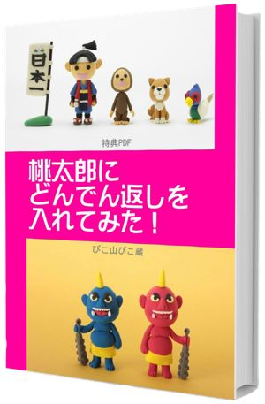
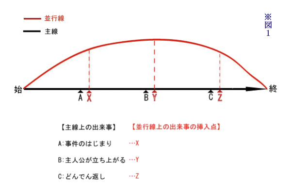

| 大どんでん返し創作法: 読む人を魅惑する逆転の法則 ベストセラー作家養成シリーズ | |
| 今井昭彦 | |
| arasujidottokomu (2015) | |
| Tags: | 物語 ストーリー 作り方 |
■特典 無料ＰＤＦ／電子書籍「桃太郎にどんでん返しを入れてみた！」
大どんでん返しの手法を使って平凡な桃太郎のおとぎ話がどのように変わるのか、本書の法則を６つの事例で具体的に解説します。桃太郎のストーリーの意外な展開に驚かれると思います。
★サルが殺された。犯人は誰だ。桃太郎たちを待ち受ける恐るべき真実とは？
★遥かな鬼ヶ島、旅費を稼ぐために桃太郎が思いついたビジネスは想像を絶する反響を呼ぶ！ など。
桃太郎のストーリーの中でお会いしましょう！ 今井昭彦
これから始まるのは、娯楽として供されるストーリーの作り方を研究する『面白い物語創作講座』です。これを読んでいるあなたは今、故あって物語を作る必要に迫られているはずです。大賞への応募作を書くためかもしれないし、次の発表会でオリジナルの芝居を演じるためかもしれません。または仲間と映画を撮るのかもしれないし、あるいはただ自分の力を試すためかもしれません。
それがどんな動機に基づくものにせよ、まず大事なのは、あなたが書こうとしている物語が「面白くなくてはならない」ということではないでしょうか。しかも、長くても一年後、短ければ明日の朝までに、などという締め切りがあります。その上、書き始めるのは簡単そうに見えますが、最後まで書き終えられる人はとても少ないという現実があります。
それでは、初心者が物語を作ることは、らくだが針の穴を通るほど難しいのかと言えば、実はそうでもありません。何事にもセオリーがあり、攻略法というものが存在するのが人の世の常です。楽しく素早く物語を創作するために有効な方法が存在します。
それは「型」を活かすこと。「型」とは、先人が試行錯誤を重ねた挙句に発見した法則であり、多くは最も合理的なハウツーです。オリジナルであろうとする気持ちが強いが故に、特に物語の創作においては人は模倣を嫌うものです。しかし、そのプライドによって合理的な筋道や定石を知らぬまま、わがままや自分勝手を芸術だと錯覚する愚に陥りやすいのも確かです。
「型」とはそんな「好き嫌いで物を作る」レベルから脱却するための客観的な視点を持つことの出来るツールなのです。型を学ぶことで、物語構成の基本を体系的に理解し、破綻することなく語れるようになるのです。そして何より、実際に最後まで物語を完成することが出来ます。また、たくさんの「型」を知ることの重要性は、むしろ日々の創作に追われるプロフェッショナルにこそ理解されやすいのではないでしょうか。
さあ、ご一緒に焚き火の前に座って、《物語の型》にそっと隠された人生の神秘を語ろうではありませんか。
多くの人がオープニングから物語を書き始めますが、そのほとんどは最後まで完成できません。それはなぜでしょう？ 閃いたかっこいいオープニングの落とし穴に気をつけましょう。
面白いストーリーを作るためにあなたは何をするべきか
ブンコ「私の名前はブンコ。作家になりたい女。でも、なかなか作品が書けない。書き始めても最後までフィニッシュできない。どうしてなんだろう？ やっぱり才能がないのか......？ 文章教室に通おうか？」
ぴこ蔵「そんなことはないぞお」
ブンコ「あんただれ？」
ぴこ蔵「わしはあらすじのプロ、ぴこ山ぴこ蔵じゃ！ 日本中の悩める書き手を救うためにやってきたのじゃ！」
ブンコ「あんたいったい何を言って...... たった今、弟子にして下さい！」
ぴこ蔵「すごい食いつきじゃな」
ブンコ「だって本当に悩んでるんだよー。だれでもいいから助けて！」
悩める書き手に教えたい
ぴこ蔵「それではさっそく最初の質問じゃ！ お主は物語を作るとき、まずかっこいいオープニングから書き始めておらんか？」
ブンコ「もちろん！ 最近の自作でもお気に入りのファンタジーは〈その赤銅色の龍は、この星の一番高い場所にある万年雪の下で、永遠にも似た眠りを静かにむさぼっていた。〉から始まるの！ なんか凄いお話がはじまりそうでしょ」
ぴこ蔵「ほほう！」
ブンコ「ハードボイルドなサスペンスだってあるんだよ。〈朝焼けが始まった頃、店の駐車場に一台の車が滑り込んできた。まだ暗いというのにスカーフとサングラスで顔を隠した女が運転席のウインドウを開けて私に合図した。私は営業用の笑顔で車に近づくと女が話し掛けてくるのを、そしてサングラスの奥にある美しい眼を見せてくれるのを待った。しかし女はサングラスを外すよりも先に、ハンドバッグの中から拳銃を取り出した。〉なーんて感じの、そりゃもうかっこいい、マイ・フェバリット幕開け。自分の中に湧いて出たイメージに陶酔してしまう瞬間だよ。もうこれで一本書けたような気になってしまうのよん」
ぴこ蔵「実はそれが失敗の原因なんじゃよ」
ブンコ「ギクッ！」
ぴこ蔵「そういうのってオープニングのインスピレーションは強烈でもまず長続きすることはないからのう。その場の雰囲気にハマッて始めた恋愛と一緒じゃよ。お主は自分の影に恋をしておるのじゃ。うひょひょ！」
ブンコ「ギクギクギクッ！ 何てこと言うんだアンタは！」
ぴこ蔵「ちなみにお主、その小説、最後まで書き上げたのか？ いや、半分ほどでも書いたかな？」
ブンコ「か、書いてません......」
ぴこ蔵「なぜ書かないのじゃ？」
ブンコ「だって、刺激的なオープニングが終わると、主人公がさっそく途方にくれちゃって。次に何をすればいいのかわかんないんだもん」
ぴこ蔵「それはそうじゃろう。お主が決めておらんのじゃから」
ブンコ「げげっ！」
ぴこ蔵「そんなタイプの人は書く順番を変えることじゃよ」
ブンコ「書く......順番？」
ぴこ蔵「よーし、それでは教えてあげよう！」
何はなくとも「どんでん返し」
ぴこ蔵「書きたい物語のイメージをすでに持っているなら、あっと驚く結末を作るためにはまず、おぬしの物語イメージに合わせた【どんでん返し】を作ることじゃ！」
ブンコ「どんでん返し？ あのなんとかサスペンス劇場とかで最後に意外な犯人が出てくるやつ？」
ぴこ蔵「まあ、あんまり意外ではない場合がけっこうあるけど（笑）基本的にはそういうことじゃ」
ブンコ「だって老師、それじゃサスペンス劇場用の作品しかできないじゃん」
ぴこ蔵「とんでもない思い違いじゃな。ミステリー、サスペンスは言うに及ばず、恋愛、ホラー、アクション......。どんなジャンルの物語にも、どんでん返しが隠れておる。それどころか、大前提なのじゃよ。むしろ、人はどんでん返しを読みたいがために小説を読むのじゃ。どんでん返しがなければ、面白いとは思ってくれん」
ブンコ「本当ですかあ？」
ぴこ蔵「少なくともエンタテインメントの要素を持つ物語ならどんでん返しは必ず必要じゃ。事実を伝えることに意味があるノンフィクションとか、あるいは哲学的な思索を繰り広げる高邁な思想書なら、確かにそんなものは関係あるまい。しかし、エンタテインメントはそれでは許されんぞ。面白くなければ娯楽としての存在価値がないのじゃ。人間とは、薬がどんなに苦くても文句を言わんが、ケーキが期待していたより甘くないと怒り出す生物じゃ」
ブンコ「どんでん返しがあるとどうなの？」
ぴこ蔵「どんでん返しが提供するのは、信じていた世界が一瞬で大逆転する衝撃じゃ。予測可能な展開だったはずなのに、あっという間に何もかもが姿を変える。頭の中は真っ白。アドレナリンとドーパミンが駆け巡る至上のびっくり体験なのじゃ！」
ブンコ「それは確かに自分の作品にどんでん返しが入ってたら面白いよねー......。ちょっと興奮するなー」
ぴこ蔵「さて、やっとこれでスタート地点に辿り着いたのじゃ。次回からいよいよ、誰も教えてくれなかった面白くてたまらないストーリー作りのための具体的なテクニックについて説明をはじめられる。つまり、突き詰めればどんでん返しの秘法じゃ！」
ブンコ「いや、でも、ぴこ蔵師匠。あたしみたいな素人にどんでん返し作れったって、いきなりそれって難しくないかねー？ もっとこう、地味で堅実な文章修行とか......」
ぴこ蔵「いやいや、お主が一番最初にやらねばならんのは派手な【どんでん返し】の作り方を覚えることじゃ。そうすれば、物語作りはあっという間にプロ並みじゃ。なぜなら、どんでん返しこそが全てを決めるからじゃ」
ブンコ「どんでん返しが全てを決める？？？？」
ぴこ蔵「その通りじゃ。結末、伏線、オープニング、全てを決める。難しい、複雑そう、というのは思い込みに過ぎん。どんでん返しには簡単な作り方があるのじゃ！」
ブンコ「そ、それを早く教えてくでーっ！」
葛藤を描写するには工夫が必要である。ある登場人物が一人で悩んでいてもビジュアル化が難しい。コツは複数の登場人物間の対立に持ち込むこと。
面白くない話は退屈
ブンコ「さて、ぴこ蔵師匠、ストーリー作りの一番最初にやるべきことはどんでん返しの作り方を覚えることって言ってたよね？ 早速教えて！」
ぴこ蔵「あせるな。まずはその【どんでん返し】の構造を理解するために面白い物語はどうやって出来ているのかを見てみよう！」
ブンコ「えっと、面白い物語って例えばどんなの？」
ぴこ蔵「まず、その逆を考えてみようか。誰も楽しめない話があるとすれば、それは例えば、朝礼の時の校長先生の長話じゃ」
ブンコ「げっ、それ聞いただけでもう貧血気味だ！」
ぴこ蔵「退屈じゃからなー。サスペンスもないし、ロマンスもない。大体結論もわかっておるし、ギャグも言わん」
ブンコ「その上、お説教されるんだもんなー」
ぴこ蔵「この手の話と対極にあるのが【面白い物語】じゃな。ドキドキはらはら、次はどうなるの？ あの人は誰のことを愛しているの？ そんな一瞬たりとも気が抜けない話じゃ。手っ取り早く言ってしまえば、それは【ドラマチックなストーリー】のことじゃな」
ブンコ「ドラマチックって具体的にどういうこと？ どうすればドラマチックになるのさ？」
ぴこ蔵「小説とかシナリオの書き方を解説した本を読むと、ドラマとは葛藤であると書いてあるのをお主もよく目にするはずじゃ。つまり、物語をドラマチックにするためには【葛藤】とやらを持ち込めばええのじゃ」
ブンコ「【葛藤】とか言われたって全然わかんないよー。画数の多い漢字を見ると、頭がぼやーっとしてくるんだよねー」
ぴこ蔵「そうか。するとお主、〈主人公の成長や変化の過程における葛藤を書け！〉なんて言われると頭がフリーズしてしまうじゃろな」
ブンコ「もうサイアクー！ なんか葛藤って夏休みの朝顔観察っぽいよねー」
ぴこ蔵「いいところを突いたぞ！ ちなみに辞書を引いてみると......
【葛藤（かっとう）】
〔もつれ合う葛(かずら) や藤の意から〕
(一) 人と人とが譲ることなく対立すること。争い。もつれ。
(二)〔心〕 心の中に相反する欲求が同時に起こり、そのどちらを選ぶか迷うこと。コンフリクト。
(三) 禅宗で、解きがたい語句・公案、また問答工夫の意。
まさしくもつれあうツルとツタのことじゃ。ありゃりゃ、禅問答まで出てきおったぞ。葛藤と言う概念はどうも抽象的で扱いにくいんじゃのう」
ブンコ「葛藤ってさー、意味ぐらいはわかるけど、視覚的にイメージしづらい言葉だよね。なーんか四畳半で一人ぐじぐじ反省するって感じだし」
ぴこ蔵「確かに葛藤のヴィジュアルはなかなか思いつかんなあ」
ブンコ「だいたい、主人公が葛藤する様子なんてどうやって描写すればいいのさ？ 髪の毛をかきむしりながら独り言でもゆーのか？ 口元をゆがめて手も少し震わせてやろーかなー。違うなー。そーゆーことでもないなー。ポーズかな？ 腕を曲げて腰に当ててクイクイッと。そんな葛藤はやだなー。こりゃいかん。無理だ無理だ。あたしに主人公の葛藤なんて描けないよ。老師、またしても頭がぼやーっとしてきた」
ぴこ蔵「それは、一人で葛藤すると思うから難しいんじゃよ。心理描写しようなどと思ってはいかんぞ。ありゃつまらん。エンターテインメントで【内面の葛藤】は止めたほうがイイ。特に、映像化を考えておるのならおすすめできん。名手ならともかく、おぬしがやっても読者に迷惑かけるだけなのじゃ。こんな時、よいこは頭を使うのじゃ。例えば......人と人とが争う様子を書くのはイメージしやすいじゃろ？ 内面の葛藤も擬人化すればいいのじゃ。誰か主人公が葛藤する相手を登場させればいい。考え方をこう変えてみるのじゃ！
ドラマとは主人公の葛藤から生まれる
↓ ドラマとは主人公が他の登場人物と葛藤することで生まれる」
ブンコ「うーん、まだ【葛藤】の意味がわかりにくいな」
ぴこ蔵「ならば、お主にもわかりやすい言葉に置き換えてみよう。それは辞書の中にも出てくる「対立」という言葉じゃ。すると、こうなる。
↓ ドラマとは主人公が他の登場人物と対立することで生まれる」
葛藤とは対立である
ブンコ「なるほど！ ってことはつまり、手っ取り早く話をドラマチックにしようと思ったら主人公を登場人物とケンカさせればいいわけだ。でも、ホントかなあ？」
ぴこ蔵「葛藤とは、簡単に言えば、異なる意見の中で自分の考えが選択に悩むことである。具体的に言うとこういう例が考えられる。登場人部は主人公と友達。二人で歩いていると主人公が落ちていた財布を拾う。葛藤のポイントはこの財布を交番に届けるか否か。ここからは会話じゃ。
主人公「おいおい、二万円も入っているぞこの財布」
友達「ふーん、でどうすんの？」
主人公「なんかうまいもん食って、欲しかったゲームソフトでも買うか」
友達「これだからゲスなやつとは付き合いたくねえんだよな。お前のやろうとしていることは最低レベルの犯罪だ」
主人公「なんだよおまえ、もしかして交番に届ける派？」
友達「あたりまえだよ。そうすれば半年後に合法的に二千円が手に入る。ノーリスクでだ」
主人公「それって逆にいやらしくない？ 正義とはそんなことでいいのか」
友達「泥棒に正義を語られたくないね。さあ、とっとと交番に行くのだ。キリキリ歩け！」
主人公「全然釈然としないな。でもな、二千円入ったとしてもお前には奢らないからな」
まあ、こんな感じであろう」
ブンコ「なるほど、一人で迷うより伝わりやすいし、会話にすればそれだけで面白いね。でも、なんか難しくないかな。私にもできんのかな」
ぴこ蔵「コツとしては、うまく会話がはずまないところを思い切ってちょっとケンカ腰の会話にしてみることじゃ」
ブンコ「どんな感じかやってみてよ」
「対立」は物語のエンジン
ぴこ蔵「それでは【対立】の実例として〈会社に遅刻したOLと上司との会話〉を書いてみよう。ただしポイントとして、この会社では電車の事故で遅れた場合は証明書が必要ということを絶対書かなければならないと決めておこう。ま、対立を避けて平穏に会話するとこんな感じじゃろう」
上司「おや、どうしたの？ 遅刻？」
OL「すみません！ 忘れ物して一本遅いのにしたら今度はその電車が事故って......」
上司「三十分ね。まあしょうがないよね。たまにはこんなこともあるさ」
OL「何か証明する書類とか提出したほうがいいですか？」
上司「ま、念のためってことで、悪いけど駅で証明書もらっといてよ」
OL「はい、わかりました。申し訳ありませんでした。以後気をつけますから」
上司「はいはい。よろしく」
ブンコ「なんかこんな会話、別に書くほどのもんじゃないですよね」
ぴこ蔵「どうやってもこれ以上はふくらまないしな。そこで、軽くギャグ風に対立させるとこうなる」
上司「おい、遅刻してきて挨拶なしか？」
OL「だって電車の事故だもん」
上司「こっちは別に電車で来てくれって頼んだ覚えはないぞ」
OL「じゃあタクシー代、課長が出してくれるんですか？」
上司「そういうことを言ってるんじゃないだろ！」
OL「わかりましたよ。駅で証明書もらってくればいいんでしょ」
上司「なんだよお前、態度悪いぞ」
OL「お前なんて言わないで下さい。私は課長の奥様じゃないんです」
上司「当たり前だ。俺の女房になんかするわけないだろ」
OL「まあ、奥様にはお前なんて言えないと思うけど」
上司「言ってるよ」
OL「あら、じゃあこないだの飲み会でセクハラしたの、奥さんにはまだバレてないんですねえ」
上司「あ、それは違うんだ。誤解、誤解なんだよ」
OL「フン」
ぴこ蔵「ちょこっと対立させるだけでテンションが上がる。読者も〈おや？〉と集中するし、伝えたい情報の他に〈次はどうなる？〉の要素が入ってくる。つまり、いろんな情報が隠しやすいのじゃ」
ブンコ「情報を隠すってどういうこと？」
ぴこ蔵「例えばこの〈駅で証明書をもらう〉というのが重要な伏線だとする。ところが、この時点では読者にそのことを気づかせたくない。そんな時、OLと上司の関係に目を向けさせてしまえば、読者の意識はそちらに流れてしまうのじゃ」
ブンコ「実例だとよくわかるねー。退屈になりそうな部分には対立関係を持ち込む。緊張感も出るしテンポもいいし。登場人物のキャラも立ってずいぶん面白く説明できちゃうんだなー......」
ぴこ蔵「ドラマとは主人公が他の登場人物と対立することで生まれる。さて、それでは主人公は、いったい誰と、何のために対立するのじゃろうか？ 実はそこには、お主の物語を一気に走り出させるための【物語のエンジン】が隠れているのじゃ！」
ブンコ「ドラマとは、主人公が他の登場人物と対立することで生まれる。......なるほどなー！」
物語をドラマチックにする要素【対立】。対立があるものとないもの、二つのあらすじでそのテンションの違いを確かめてみよう。
ストーリーをだらだら展開しないために
ブンコ「主人公が他の登場人物と対立することで物語がドラマチックになることは分かったよ。じゃあそろそろどんでん返しの作り方を教えてくれるよね？」
ぴこ蔵「まだまだ！ もっともっとドラマチックを掘り下げてみよう。お次のテーマは【ストーリーの基本形】！ まあ、ストーリーのパターンと言っても相当あるし、その作り方に到っては星の数じゃ。決して誤解して欲しくないのじゃが、わしは、唯一絶対のストーリー製作法を教えるわけではないぞ。そんなものはあり得ない！ 不可能じゃ！ ただ、最低限これさえ知っておれば、少なくともお主のストーリーが途中で道に迷うことはない......という、非常に簡略化した方法を伝授しよう。この方法を用いて、とにかくひとつでもいい、あらすじを最後まで作って欲しいのじゃ！ 一つ出来たらもう一つ。これを何度も繰り返すことによって、創作の要点が掴める。何事も経験、そして反復練習じゃ！ アタマで考えてテクニックを選んでおるようではまだまだ。無意識にさまざまな技法を繰り出せるようになるまで、とにかくあらすじを作りまくることじゃ！ 一日一あらすじ！ これが目標じゃ！ 説明のために、あらすじの実例を二つ用意してある。それでは、よくある失敗例として、まずは実例（１）を読んでもらおうかの。
「対立」がないと地味になる
★★実例(１）
パチンコ台には巨大な龍が描かれていた。その両眼は主人公をにらみつけている。主人公は今日も朝から暇つぶしにパチンコ屋で玉をはじいている。
いくつになっても定職につかないことに腹を立てて自分を勘当した亡き父も、会社の帰りによくこのパチンコ屋に通っていたことを思い出す。腹が減ったのでパチンコを中断し、近所の立ち食いそば屋でたぬきそばを食べていると、誰かに肩を叩かれた。振り向けば兄が立っていた。やはり暇そうである。仕事は休みかと問いかけると、兄はうなずいてそばをすすった。
主人公は兄とパチンコ屋に戻って新しい台を探す。隣同士に座って顔見知りの男の噂話をした。その男は親が急死して家業の米屋を引き継いだのだ、と主人公が言った。「米屋もあれだけどコンビニ経営もいいよな」兄は言う。「実はリストラされちゃってさ。一緒にコンビニやるか？」
突然の兄の申し出に主人公はどう答えてよいかわからない。相変わらず玉も出ない。最後の玉が無くなった時、昔、亡き父がよく歌っていた歌が店内に流れた。
その瞬間、今は亡き父の思い出とともに一つの言葉が主人公の脳裏に甦った。「兄貴を見習って就職しろ」主人公はタバコが吸いたくなる。しばらく止めていたタバコを兄からもらって火をつける。どうってことはない、またひとつ禁煙が終わっただけだ、と思う。パチンコ台の龍は主人公を叱るかのようににらみつけている。主人公は「別に何でもいいけどな、俺の方は」と呟いた。
ぴこ蔵「どうじゃな？ この例は？」
ブンコ「う～ん。これから何か始まるのかもしれないけど、まあ、普通かな」
ぴこ蔵「パチンコしてそば食ってタバコ吸っただけじゃからなあ」
ブンコ「物語のオープニングだけを聞いても〈まあ！ ドラマチックねえ〉とは思わないよねー」
ぴこ蔵「つまり、誰とも対立しない話だと期待感を盛り上げるのが難しいのじゃよ」
ドラマチックにする要素
ブンコ「ほんじゃーさー、どんな話なら期待感が煽れるの？」
ぴこ蔵「パチンコの話が出たんで、これを素材に使ってみるか。こんなオープニングならどうかな？
「対立」は緊張感を生む
★★実例(２)
古いパチンコ台には巨大な龍が描かれていた。その両眼は主人公をにらみつけている。
「約定どおり、持ち球は十発。一発でも天穴に入れば、山崎ヒロシは父親である山崎荒正師の遺した財産を相続することを認める。しかし、一発も入らない場合には全ての権利を放棄するものとする」
裁定人の児玉がよく通る声でそう言った。ずらりと雁首を揃えた一族郎党は固唾を飲んでヒロシを見ている。
「いいな、ヒロシ！」
ヒロシは頭をわずかに下げて言った。
「異論ありません」
兄のマサノブが口を挟む。
「それだけじゃない。二度とこの界隈に顔を出さないことを誓えよ」
ヒロシは兄の白っぱくれた眼鏡面を睨みつけて言った。
「おめえこそな」
狒狒野郎、と罵りたかったが我慢した。小学生の頃、実家の玄関で兄に下駄で殴られた古傷が二十年ぶりにギリッと傷んだ。マサノブは馬鹿にしたように、ふん、と鼻を鳴らして裁定人にうなずいた。
「さあ、始めてもらおう」
ヒロシはレトロなパチンコ台に視線を戻すと意識を集中した。天才釘師と呼ばれた父親が最後に作ったのがこの『画竜点睛』である。この台を攻略するのに普通の打ち方では無理だ。ここには親父の釘師人生を賭けた秘密が隠されている。
「始め！」
裁定人の掛け声が広い店内に響き渡った。
ヒロシはいきなり数発を矢継ぎ早に打った。
「同心ブレ二天......、いや、三天だ！」
見物人から驚きの声が上がる。目にも留まらぬ速さで打ち出された球は連続して天釘に当たり、微妙な変化をしながらお互いに弾きあう。
「馬鹿め！ それでは龍の髭は破れぬわっ！」
マサノブが勝ち誇ったように叫んだ。
ぴこ蔵「どうじゃ？ 急ごしらえなんで設定がいい加減なのは大目に見てくれ。ビッグ錠＆牛次郎みたいでいい感じじゃろ？（笑）」
ブンコ「少年漫画のオールドファンならうなずいてくれるかもよ。でも確かに、前の話に比べると、少しドラマチックな雰囲気になったよねー。緊迫感があるもん」
ぴこ蔵「そこじゃ！ そこが秘伝のテクニックじゃ！ 誰もが簡単に作れる【物語のエンジン】があるのじゃ！」
ブンコ「えっ？ すると師匠、ストーリーをドラマチックにするための特効薬みたいなものがあるということすか？」
ぴこ蔵「その通り！ いいか、よく聞くのじゃぞ。物語を前に進めるには、二つの設定をする必要がある。それは【目的】と【障害物】なのじゃ！」
ストーリー展開で混乱しないためには、物語を書く前に【主人公の目的】と【その達成を邪魔する障害物】を作り、ゴールへの道筋を決めておくとよい。
主人公に目的はあるか
ブンコ「ストーリーを前に進めるための【物語のエンジン】には、主人公の目的と障害物の二つがあるって言ったけど、これってどんでん返しと関係があんの？」
ぴこ蔵「多いにあるのじゃ！ それを理解するためにも目的と障害物についてもう少し考えを深める必要がある」
ブンコ「それじゃあぴこ蔵師匠、主人公の【目的】っていうのはどーゆーこと？」
ぴこ蔵「主人公がやらねばならんことであり、主人公の存在理由そのものじゃ。意味もなく外出したり、暇なのでパチンコに行ったりする。そんなヒマは主人公にはありゃあせん。何も変わらないなんてもってのほかじゃ。エンタメにおいて読者の貴重な時間を浪費することは許されん。パチンコひとつやるにも確固たる動機が必要なのじゃ！」
ブンコ「き、厳しいんだねー、エンタメの主人公の立場って」
ぴこ蔵「当たり前じゃ。主人公は何かを為すために存在しておる。エンタメの読者は気が短い。次に何をするかがなかなか見えてこない雰囲気依存のシーンは危険すぎるのじゃ！」
ブンコ「前回の実例（２）の主人公の場合は、遺産を相続するためにパチンコ台を攻略するというのが目的になって、ストーリーが動き始めたわけかー」
ぴこ蔵「主人公の明確な目的こそが【物語のエンジン】なのじゃ！」
ブンコ「じゃあ、ストーリーが始まったらすぐに事件が起こらないと読者はついてきてくれないんだねー。オープニングでは出来るだけ早く目的を明確にすることが作者の義務ってことか」
ぴこ蔵「おぬしの主人公は目的に向かって全力疾走しとるか？」
主人公には苦難を与えよ
ブンコ「じゃあ【障害物】ってゆーのは何？」
ぴこ蔵「これが人間の不思議なところなんじゃが、いくらすごい目的を設定しても、あまりにも事が順調に運んではちっともドラマチックには感じないのじゃな」
ブンコ「確かに、これと言ったピンチもなしに目的がすいすい達成されたって、読者にとってはぜんぜん面白くないもんねー」
ぴこ蔵「良いエンジンを積んだら、さらに物凄い悪路を走らねばならん。苦労しないと読者は前に進んでいる実感が湧かんのじゃ。いやはや、物語作りはサファリラリーみたいな作業じゃよ」
ブンコ「読者の興味をひきつけるためには、主人公を襲う苦難や高い壁が必要だってことかー！」
ぴこ蔵「抵抗感があるからこそ前進が実感できる。【障害物】とはまさにそのことなんじゃよ！」
面白い物語の基本形
ぴこ蔵「さて、面白いストーリーにするためには、主人公が目的を持っていることと、障害物があることが必要じゃということがわかった。それでは、その二つを話の流れに取り入れるとどんな風になるかな？」
ブンコ「主人公はある目的を持っている。当然その目的を達成しようとがんばるよね。ところが、それを邪魔する奴がいるわけ。主人公はそいつと戦うことになる......」
ぴこ蔵「うむ、つまりこれが【対立】ってやつの正体なのじゃ」
ブンコ「わかりましたー！ 主人公は目的達成のために障害物と対立するわけだ！」
ぴこ蔵「そういうことじゃ。ドラマとは、主人公が目的達成のために障害物と戦うこと。つまり、面白いストーリーにするには、主人公が目的のために邪魔者と戦うべし！」
ブンコ「師匠、不肖アタクシめがまとめさせていただいちゃうよ。
〈面白いストーリーの基本形〉
★目的を達成したい主人公が、それを邪魔する敵と戦う
これでどう？」
ぴこ蔵「上出来じゃ。お主が書くべき【面白いストーリー】の姿がますますわかりやすくなってきたのう。特に、とりあえず初めて物語を書くのなら、ある目的を達成したい主人公がそれを邪魔する敵と戦う話がおすすめじゃ！ 基本中の基本じゃからな」
ブンコ「よーし、さっそく主人公の目的を決めなきゃなー！ でも、どうやって？ 」
ぴこ蔵「焦るでない焦るでない！ お主にも簡単に【主人公の目的】を決める方法があるのじゃ！ じゃが、そのためにまず知らねばならぬことがある!! その前に、この章のまとめなのじゃ！」
★面白いストーリーの基本とは
「ある目的を達成したい主人公が、それを邪魔する敵と戦う」物語
活動的でない主人公にお困りの方へ。主人公がいちばん大切にしているものとは何だろう？ それを見つけて奪い取ることで、主人公は勝手に動き出す。
主人公には行動する目的と動機が必要
ぴこ蔵「物語を面白くするには黄金の基本パターンがある。もう一度聞いておくか。ブンコちゃんよ、それはなんじゃ？」
ブンコ「目的を追う主人公が邪魔する敵と戦う」
ぴこ蔵「そうじゃな。ならば、この【 主人公の目的 】というやつをお主はどうやって決めておる？」
ブンコ「え？ 急にそんなこといわれても......。だってあたし自身の人生の目的もまだ決まってないのにさー」
ぴこ蔵「うーむ、さすがミス行き当たりばったりじゃな。お主の爆笑人生に関してはわしにはどうしようもないが、主人公の目的なら決めるヒントがあるのじゃ！」
ブンコ「師匠、ぜひ教えておくんなまし！ どうすれば大金持ちになれますか？ 少々ヤバイ話でも可」
ぴこ蔵「だからお主の金目当ての犯行についてはわしゃ知らんがな。しかーし！ 【 主人公の目的 】を決めるにあたっては実はとっても簡単でうまいやり方があるのじゃ！」
ブンコ「知りたーい！ 教えて！」
ぴこ蔵「よいか、よく聞くのじゃぞ。【 主人公の目的 】を決めるなら【欠落感】を探すのじゃ！」
ブンコ「ケツラクカン？ 」
ぴこ蔵「もしくは欠如とも言う。お主の物語世界で、これだけはなくなっては困るという大切なものがなくなることじゃ」
ブンコ「大切なものか......」
ぴこ蔵「例えばお主がいま一番大切にしているものはナンじゃ？」
ブンコ「なんだろ？ スマホかな」
ぴこ蔵「そしたらそのスマホが、ある日突然、なくなってしまうのじゃ。お主、どうする？」
ブンコ「草の根分けても探す！ なくなったら絶対マズイ！」
ぴこ蔵「な？ さすがのナマケモノもたまらず行動に移る」
ブンコ「かーっ！ ムカツクー！ でもそんなことしてる場合じゃない。スマホはどこ？ どこ行ったーっ！」
ぴこ蔵「それと一緒じゃ。主人公も必ずそれを取り戻すために行動を起こすはずじゃ。ないと困るから取り戻しにいく。これこそが最も手っ取り早い動機付けじゃ」
ブンコ「はっ!? なるほど。つまり、主人公に目的を持たせたかったら、主人公の大切なものを奪っちゃえばいいわけ？」
ぴこ蔵「例えば、健康やお金じゃったり、家族の平和じゃったり。なんぼでも出てくるじゃろ？」
ブンコ「それって結局、人間にとって何が幸せかっていう話になるのかも。深くなりそうだね」
ぴこ蔵「深すぎて収拾がつかなくなる。ここから先はそれぞれの作品、それぞれの作家が持っているテーマ性やメッセージにかかわってくるので一般論としてはここまでしか語れない。他にも目的としては復讐や夢・野望などがあるが、それはまた別のところで詳しく語ろう。ただし、この手の話は個別に面談しないと最適なアイデアというのは出にくいもんじゃ。とにかく、主人公を動かすなら【大切なもの】を取り上げるに限るのじゃ！」
ブンコ「目的を生み出すのは【欠落感】かー!?」
ぴこ蔵「わかったらさっさと主人公から大切な何かを奪い取るのじゃ！」
ブンコ「さすが師匠！ 何につけても話が早い！」
主人公は変化･成長しなければならない。それが人間を描くことであり、感動の焦点だからだ。ここでは、具体的に何を書けば「主人公の成長」を表現できるか？ について研究している。コツは【選択肢】にあった。
主人公の成長
ぴこ蔵「さて、物語に魂を注入するとしよう。つまりテーマを明確に押さえるのじゃ」
ブンコ「えーっ？ そんなこと考えてないよー」
ぴこ蔵「考えていなくとも、物語である限り自然に備わっているものじゃ。中でも【主人公の成長】を明確に描くことは読者に感動を与える大事なテーマの一つじゃ！ ただし、ここで気をつけたいことがある。成長するためには、主人公が行動することが重要なのじゃ。しかし、行動で表わすというのは実はけっこうむずかしくて、具体的に何をすればいいのか分からない。そこで、選択すればいいのじゃ。あらかじめ、主人公が取るべき行動を二つの選択肢にしておいて、主人公に選ばせるわけじゃな。その選択肢は、テーマを表現するために主人公がしなければならない行動とは何か、を考えることによって作り出せるのじゃ。そして、この選択は二度行われなければならない」
ブンコ「へっ？ 二度？ どーして？」
ぴこ蔵「【最初の選択】と【第二の選択】で同じような内容の選択肢が提示され、主人公はそれぞれ違う選択をする。その時......
▼最初は未熟な思考によって誤った選択をする。
▼二回目は何事かに開眼して見事に正解を選択する。
このように、一度目と二度目との変化によって、主人公の成長を明らかにするわけなのじゃ。応用として、わざと同じ選択をすることで【成長】を見せるという、読者の予想の裏をかくひねりを効かせた高等テクニックもあるが、要はさまざまな意味での成長を具体的に例示できればよい」
ブンコ「つまり、主人公に同じようなシチュエーションで二回、次に起こす行動を選択させるわけだなー。で、一回目の選択はいつやればいいの？」
ぴこ蔵「できるだけ最初の方じゃ。オープニングでもかまわん」
ブンコ「どんな選択肢を作ればいいの？」
ぴこ蔵「主人公の性格を説明し、その未熟さを表現するために、ストレートに欲求を表わす選択をさせるのじゃ。例えば〈主人公は空腹を感じたのでパンを盗んで食べた〉みたいな」
ブンコ「それじゃあ、二回目の選択はいつやんの？」
ぴこ蔵「これはちょっと難しいぞ！ 物語の後半で、どんでん返しが起こった直後じゃ。このタイミングで一回目の選択とは逆の選択をするのじゃ！」
ブンコ「逆ってつまり、食べたパンを吐き出して空腹になるってこと？」
ぴこ蔵「違うわいっ！ 空腹でもパンを盗んだりしないということじゃっ！」
ブンコ「なんだ、簡単じゃん」
ぴこ蔵「そして、実はここでもうひとつ注意点があるのじゃ」
ブンコ「まだ～？」
ぴこ蔵「なぜ二回も選択する必要があると思う？」
ブンコ「だから、一回目と二回目で別の選択をすることで主人公が成長したことを伝えるんでしょ？ 最初は盗んだパンにかぶりついてた奴が、大人になったんで、腹が減ってもパンを盗まなくなるわけだ」
ぴこ蔵「読者はそう感じるわけじゃが、作者は反対に考える。【第二の選択】で成長した主人公を表現するのならば、【最初の選択】は未熟者の選択でなければならん」
ブンコ「なるほど！ 最初から完成された人格を持った主人公は変化しづらいけど、主人公が未熟だと成長させやすいってことだー」
ぴこ蔵「その通り！ 最初、主人公は未熟であること。成長の余地を残したキャラであることが大事なのじゃ」
ブンコ「そこであんまり主人公に自分を投影しすぎないようにしないと、つい立派すぎる主人公を作っちゃうおそれがあるんだよね」
ぴこ蔵「最初から完璧に描いてしまうと、どうしても無理が来るのじゃ。成長させようとすると想像力が追いつかず絵空事になってしまう。それから、無意識というのは怖ろしいものでな、主人公が自分と一心同体になっておると、その身をまるで我がことのように心配してしまうことがある。せっかく作った、鋭いガラスの破片で覆い尽くされた床。なのに、主人公は靴底に分厚い鉄板の入ったブーツで走ったりしてしまう」
ブンコ「あうっ！ だって主人公ちゃんが痛そうなんだもん......」
ぴこ蔵「毒蛇うようよの穴に落ちた主人公が、誰一人噛まれてもいないうちからさっさと火炎放射で蛇を焼き尽くす」
ブンコ「げげぶっ！ だってそんなの気持ち悪すぎるんだもん......」
ぴこ蔵「じゃあ登場させるなっつーの！」
ブンコ「確かにあたしの主人公にはびっくりするほど説得力ないっすよ。厚着して、たらふく食わせて、走るのイヤだからドラゴンにまたがりますよ。ああそうさ、自分に甘いから主人公も過保護さ！」
ぴこ蔵「それでは読者が可哀想じゃ。なんで他人が楽な思いばかりする話を読まされて〈これぞ今世紀最大の冒険！〉とか言われなければならんのじゃ。読みたいのは裸足でガラスの破片の上を失踪する主人公の痛みであり、感じたいのは蛇に噛まれてふくれあがる顔面の苦しさなのじゃ。しかしお主の主人公と来たら、全然ピンチになったりしない。いつもカッコつけて説教するばかりじゃ」
ブンコ「そーいえば、主人公が悪党どもに説教するシーンをお姉ちゃんに読ませたらいつもあんたが親に言われてるセリフだってぬかしやがってさ、頭に来たからお姉ちゃんの柿の種チョコ食べてやった。ガハハ」
ぴこ蔵「何をやっとるんじゃ！」
ブンコ「そんな、ちょっと未熟な私でした」
ぴこ蔵「最後まで未熟では意味がないので、ちゃんと成長させることじゃ」
ブンコ「あたしがなかなか成長しないのはどーしてだろーね？」
主人公の成長のキッカケは「他人の指摘」が効果的
ぴこ蔵「さて、主人公はある時、一気にグーンと成長しなければならん。おぬしとその主人公がなかなか成熟しないのは、成長の仕方に説得力がないからなのじゃ！」
ブンコ「ギクッ！」
ぴこ蔵「おぬしの主人公は、自分の未熟さにあまりにも都合よく気づいてはいないか？ なんのキッカケもなしに突然目覚めたりしてはいないか？」
ブンコ「そういえば、家族総出で大掃除やってる時にあたしゃ隠れてマンガ読んでてさー、〈遊んでるんだったらみんなの昼ごはん作れ〉って親に命令されたんだ。だから〈あたし料理が下手だってことに今突然気づいたから〉って断ったら、〈そんなのみんな昔から気づいとるわっ〉〈こっちは死ぬ気で食ってやると言ってるんだ〉〈ただ死ぬ前にお前の首だけは絞めさせてもらうからな〉だってさ。家族全員にツッコまれて血の涙流しましたよ」
ぴこ蔵「うひょひょ。素晴らしい経験ではないか。そもそもおぬし、小説でも、小手先のギャグで逃げようとして結局失敗するじゃろ？」
ブンコ「いくら師匠でもそんな質問には答えねーぞ！」
ぴこ蔵「主人公は自分の未熟さに自分で気づいてはならないのじゃ。だってあまりにも嘘くさいではないか！ 成長のキッカケとは、まさにどこかの誰かさんみたいに、必ず誰か他人の指摘を受けることなのじゃ！」
ブンコ「耳が痛いよー、しくしく」
ぴこ蔵「それじゃ、その痛みが大事なのじゃよ！ 主人公には思いっきり恥をかかせよ。ムチでしばけ。痛みを伴うことによってのみ、読者は主人公の気持ちを共有できる。同じ経験、同じ胸の痛み、同じ辛さを感じたとき、読者は主人公に共感してくれるのじゃ」
ブンコ「ある意味、主人公はダメ人間のほうがいいんだね」
ぴこ蔵「そういうこと。そして、他人からそのダメっぷりを容赦なく指摘されることこそが、成長への近道となる！」
主人公を成長させたければ、その成長の証拠を、具体的な行動で読者に見せなければならない。それではそのポイントとは何か？
① 成長とは何か？
「成長」とは、時間の経過と共に能力が高まり、かつて出来なかったことが出来るようになることです。つまり、「昔」の主人公に足りなかった能力を、「今」の主人公は身につけていなければなりません。「オープニング」にはとても無理だったことを、「クライマックス」では達成しなければならないのです。
② 成長の三大要素
それでは人間の成長にはどんな能力が必要なのでしょうか？ 現実の人間は複雑ですが、ここではあくまで物語上での効率を考えて、キャラクターの三大要素とされる思考（判断力）・行動（決断力）・感情（喜怒哀楽）の三つの能力に分類しました。
▼思考「こだわり、信念、信仰、美学など」
・哲学
・価値観
・態度
・見識
▼行動「決断・選択の能力、勇気など」
・行動そのもの
・行動への意思決定
▼感情「喜怒哀楽＆恐怖など」
・感情的反応
・感情的気質
この三つの能力をわかりやすい言葉に置き換えると、「知恵」「勇気」「人間性」ということになります。あなたの主人公は物語が終わったときに、どんなタイプの人間となっているのでしょうか。
あなたの理想とする主人公像は
「どんな難解な謎も解き明かす、頭のいい人」なのか？
「いかなる危険も恐れない、度胸の据わった人物」なのか？
「一度会ったら誰もが好きになる、人間味にあふれたひと」なのか？
さあ、さっそく主人公からこの三大要素のうちのどれかを奪い取るべし！ すると、成長前の主人公は、例えばこんな感じになります。
「信念」の欠けた政治家。
「行動」を奪われた刑事。
「感情」を失った音楽家。
そんな彼らが「力」を取り戻そうとする時、ほら、何かが起こりそうな予感がしてくるでしょ。
③ 精神的な成長でなければダメ
よくやる失敗例として、特訓や偶然、あるいは絶対者からの贈り物など、外部からの干渉によって成長させようとする試みが挙げられます。これには結局、成長のための真の効果はありません。特訓シーンに面白いエピソードがある、という場合ならともかく、特訓すれば主人公が強くなるだろうという、なあなあの設定では読者は決して納得しないことを知っておくべきです。
なぜなら、成長とは即ち「人間としての成長」「心の成長」だからです。「筋肉の成長」や「暗算力の成長」ではないのです。ハードな訓練の場面を描くならむしろ、主人公に不足している能力を露呈させるために描くべきであり、挫折の場面であり、問題点を明示するシーンとして認識すべきです。
それでは、絶対者からの素敵で特別なプレゼントはどうでしょう？ 藤子不二雄の名作漫画『パーマン』を見てください。普通の小学生が、ある日、空を飛ぶ能力や怪力を手に入れる話ですね。しかし、超能力の贈り物の果てに主人公が見出すのは、そのギフトに見合う責任とノルマであり、己の限界と絶望なのです。
パーマンは、義務を果たすために今日もパトロールに出かける。一方では相変わらず学校の宿題もこなさねばならず、消耗しきっている。挙句に宿題をコピーロボットにやらせようとする。ズルいぞパーマン！
▲教訓▲「主人公の成長」は、決して外部からの干渉では達成できない。
④ 成長させるために奪え！
それでは具体的にどうやって成長させればいいのでしょうか？ それが意外に簡単なのです。主人公のイメージが決まったら、そのイメージに程遠い人物像を造りましょう。そのためには、まずオープニングで主人公からその理想像の最大の魅力を奪い取ってください。頭のいい人からはその知恵を。度胸のある人からはその勇気を。人間味にあふれた人からはその人間性を。そして、物語が進むにつれ幾多の試練を経たあなたの主人公は、あらかじめ失われていた魅力を取り戻し、理想像に近づいていく。お馬鹿さんは深く考えるようになり、臆病者は度胸を身につけ、冷酷だった人は泣き、笑い、愛するようになる。まさにそうなった時、読者は感動を覚えるのです。
さて、それでは、その具体的な成長の方法を説明しましょう。
⑤ 行動しないと伝わらない
主人公の内面を行動で表わすのはけっこうむずかしいもの。間違っても「その時、マサルの心の中に勇気が生まれてきた」とか「優子の頭の中の霧が晴れていった」とか書いてはいけません。現代においてエンタテインメントなストーリーを作るのならば、当然、物語の二次利用、三次利用まで考えておくべきです。小説として書いていても、将来的には映画やドラマ、ゲームなどに転用されていくことを計算しておかねばならないのです。そのためには一にも二にも「絵になる行動」を作ることです。「小説は意識を描写するものだから」というのは今やエンタテインメントを志す者にとって危険な考え方です。そんな都合のよい言葉に甘えて、行動を描くことを怠れば、それは即ち、作品の映像化の機会を失うことに直結します。また、ことさらに映像化を前提にしなくても、こういう説明的な叙述が読者の感興を削ぐことはあっても、登場人物の内面を伝えることは絶対にない、と知っておくべきです。
⑥ 共感を生み出すには
読者に共感してほしければ想像させることです。そのためには、主人公が実際に行ったことだけを描き、その心理は推して知るべし、という方法を取るべきです。行動の内容とそれを導く状況がしっかり提示されていれば、読者は自分自身の経験から、むしろ容易にその心理を読み解くものです。
⑦「行動」を引き出すための選択肢
「行動」とそこに到る「決断」をわかりやすく伝えるためには、何かを選択させると簡単です。これなら主人公がやるべきことはたったひとつ。二つの「行動」からの二者択一でいいのですから。その二つの「行動」が、説明の必要がないほど明確に主人公の気持ちを代弁するものであれば、さらに良いですね。どっちを選ぶか？ に集中すればよいので、これなら読者も他の事に気を回さずに済みます。
⑧「選択肢」の作り方
そんな選択肢を作るときは、クライマックスから逆の順番で発想していくのが秘訣です。
ステップその１ まずは主人公が出会う危機をイメージする。
ステップその２ そして、その危機を脱するために必要なものとは何かを考える。
※この時、（知恵／勇気／人間性）のどれかから選ぶと発想しやすい。
ステップその３ 次に、それでは今選んだ要素の対極とは何かを考える。
（知恵であれば無知、勇気なら臆病、人間性なら非情さなど）
ステップその４ その二つの要素を「具体的な行動」として表現する。
※例えば「知恵と無知」という組み合わせを具体的に表現するために......
●主人公は難しいクイズに正解するために知恵を働かせる
●主人公は難しいクイズを解くことをさっさと諦める
このように小道具や状況を使うことで「行為・行動」に置き換えて選択肢を作る。
ステップその５ 大ピンチを迎えた主人公は、危機を脱するために(ステップその４)で作った選択肢から正しい方を選択する。
ステップその６ そしてクライマックスで主人公が危機を脱する場面を作る。
ステップその７ クライマックスが出来たら、次に物語のオープニングを作る。
ステップその８ できるだけ物語の始めの方で、主人公に選択肢を選ばせる。
ステップその９ この時、主人公が選ぶのは、クライマックスで選択する行動とは別の方の選択肢である。
こうして出来上がったオープニングとクライマックスを、読者が本来読む順番に組み立てなおしてみましょう。すると、そこには、未成熟だった主人公が成長する道筋が明確に表現されているはず。最初は誰もが子どもだったのです。子どもはみんな未熟です。だからこそたくましく成長する余地もあるのです。
愛する主人公を傷つけまいと、最初から完璧な人間にして登場させると、成長の余地がなくなってしまいます。強くて立派な主人公はそれ以上の伸びしろがありません。
そうなると、フラッシュバックによる回想シーンなどで、まだ弱くてへなちょこだった成長前の主人公を描く必要に迫られます。うまくやれば少しぐらいなら許されますが、基本的には......ウザイですよね、フラッシュバックって。どうしても話の流れが複雑になってしまいますから、時間軸を整理しなければならない場合でなければ、使わないほうがいいのです。
例外としては、オープニングで読者を引き込むために、まず強烈なアクションシーンから入ることがあります。その後で、なぜその場面に至ったかを説明するために「主人公の回想」を使うことがあります。構成を前後することによって読者の心を掴む基本テクニックです。それ以外で使われる回想シーンは構成の失敗による安易な後付けであることが多いようです。
主人公を愛するのは自由ですが、何のための登場人物かを考えないと、読者にとっては共感できない人物になってしまいます。思い切り突き放して試練を与えるのが本当の親心なのです。まず作者のほうが大人になりましょう。すると、不思議なものでキャラクターのほうも自立します。いわゆる「キャラクターが自分で動き出す」という現象が起こります。なんだか子育て論みたいになりましたが、物作りの幸福はここにあると思います。創造の神が降臨して、神秘の一撃をぶちかまし、作り物のイメージに命が宿る瞬間であります。
参考例
ステップその１ まず、クライマックスとして敵と戦うシーンをイメージしたとしよう。
ステップその２ 主人公を勇気ある人間として描きたい。そのためには〈仲間のために自分の命を賭ける主人公〉を見せたい。
ステップその３ そこで、その対極として〈死に怯える臆病な主人公〉を考える。
ステップその４ その二つをペアにして具体的な行動で表現すると......
[１]仲間を守るために囮となって敵をひきつける主人公
[２]仲間を見捨てて真っ先に逃げ出す主人公
以上の二つが【主人公の成長】を表現するために必要な選択肢となる。
ステップその５ まずは第二の選択から。クライマックスで、危地に陥った主人公は[１]仲間を守るために囮となって敵をひきつける......という行動を選択する。
ステップその６ その行動によって主人公と仲間は危機を脱する......という展開にする。
ステップその７ クライマックスが出来たら、物語のオープニングを作る。読者を引き込むために、主人公の戦闘シーンから始める。
ステップその８ オープニングの一行目から主人公は危険に直面しており、[１]仲間を守るために囮となって敵をひきつける [２]仲間を見捨てて真っ先に逃げ出そうとする
以上の選択肢から行動を選択せざるを得ない状況にいる。
ステップその９ この時、主人公が選ぶのは、クライマックスで選択する行動とは別の方の選択肢。つまり...... [２]仲間を見捨てて真っ先に逃げ出そうとする......である。この選択により主人公の臆病ぶりを提示する。「最前線から怯えて逃げ帰る主人公」を描いておくのである。それによって、後日の成長ぶりをより印象的に読者に伝えることができるのだ。
さあ、これであなたも主人公の親？
マズローの欲求階層説を応用した「悪の動機」を作る。コツは欲求と欲望を見分けること。
悪を生み出す六つの「欲望」とは？
物語の登場人物が行う全ての行動には理由があります。中でも特に重要なのが悪事とその動機です。善なるものばかりを書いていても面白い物語にはなり得ません。エンタテインメントにおいては悪事は華。その悪を生み出すものは欲望です。
考えてもみてください。欲望に振り回されない人生などあるでしょうか？ いや、人生とは欲望そのものだと言ってもいいでしょう。少なくとも私はそうです（笑）
強い欲望こそがストーリーに命を与え、前に進める推進力を生み出します。そこで、欲望が人の心に忍び込むための隠れ蓑として利用する人間の欲求についてまず考えます。心理学者マズローの学説が、あなたの物語の登場人物に悪の刺激を与えてくれることでしょう。ぐっふっふ。いざ目を覚ませ、心の中のモンスターたち！
マズローの欲求段階
物語で起きる事件には動機が必要です。というよりもむしろ動機こそが事件を生むのです。そして、あなたの物語に人間性を与えるのは、まさにこの動機です。読者が衝撃を受けながらも納得できる動機を見つけたとき、あなたの物語の登場人物は実在の人間を超えるのです。そんな動機を生むのは欲望です。そしてその欲望が模倣するのが人間が本来持っている欲求です。
欲求はアクションのきっかけとしては非常に使いやすい要素です。しかし、ご注意ください！ 欲望と欲求は似ていますが明らかに違うものです。欠如しているがゆえにそれを必要とする行為が欲求であるのに対して、欠如とは関係なく欲しくなる行為が欲望です。欲求は生命維持の為に必要なものを手に入れる本能です。喉が渇いたから水を飲みたくなったり、空腹だからメシを食べたくなるので、特殊な場合を除いて善悪とは関係ありません。
一方、欲望は人間の関係性から生まれます。隣の芝生が青いというだけで欲しくなります。友達の彼氏だからという不条理な理由で誘惑してみたくなるのです。他人の幸福を模倣したい。それが欲望の正体なのです。それがために非常に複雑で、その対象は多岐に渡ります。注意すべきなのは欲望が欲求のシステムを真似して私たちの意識を騙して行動させるところにあります。これがなきゃ死んじゃう！ と思ってしまうわけですが、実はそんなものなくたって死にゃしないものがほとんどなのです。人間を描くために、私たちは悪の動機である欲望の尻尾をつかむ必要があります。そこで、まずは欲望がモノマネする欲求についてしっかり認識することが重要です。欲求の研究者、アブラハム・マズローの非常に有名な研究成果を紹介します。ぜひ、あなたの物語に応用してください。
マズロー Maslow, Abraham H.（心理学者 一九〇八～一九七〇 アメリカ）
欲求階層説
マズローは人間の欲求を五段階に分類。人間は低次の欲求が満たされると、高次の欲求を満たすように動機づけられているとした。
一 生理的欲求／食欲、睡眠欲、排泄欲など生存に関わる基本的欲求
二 安全・安定の欲求／安全、住居、衣服など
三 社会的欲求／集団に属したり、仲間に受け入れられたりすること
四 自我・自尊の欲求／尊敬されたい、名声を得たいなど
五 自己実現の欲求／自己の能力を発揮して目標を達成すること
なお、本講座では、これにさらに
六 自己超越の欲求／現状の自分の限界を超える
という説を加えて、以下の六つの欲求段階から動機となる欲求を選ぶことにします。
※以下はあくまでも「ストーリー作り」のためにまとめたものです。純粋なマズローの理論そのものとは異なる点があります。従って、学生諸君は試験勉強にはこのまま使わないほうがいいと思いますぞ（笑）
人間の行動の原点である「欲求」（マズローの欲求段階より）
生理的欲求
★サバイバル
★食欲や性欲及び睡眠・排泄・空気・庇護・睡眠への欲求、金銭欲や、俗にいう物欲など、人間が生きる上での根源的な生理的欲求
安全の欲求
★安心と安全
★自分の身を守るための住居、衣服など、安全・安定・依存・保護・秩序に関わる欲求
親和の欲求
★愛と帰属意識
★家族の中に居場所が欲しい、愛されたいなど、自分を暖かく迎えてくれる集団や人を求め、他人と関り、他者と同じようにしたいという集団帰属の欲求
自我の欲求
★尊敬と自尊
★地位や名声を得たいなど、自尊心を満足させ、自分が集団から価値ある存在と認められ、尊敬されることを求める認知欲求
自己実現の欲求
★自分がなりたいものになりたい。自らの才能や能力を開花させ、目標を達成したい。自分の能力、可能性を発揮し、創造的活動や自己の成長を図りたい......などの欲求
自己超越の欲求
★知識欲と理解欲
★審美的欲求
★調和や絶対的な秩序、偉大なるものとの結びつきを求める、神になりたい、限界を超えたい、今までや現状の自分自身を超えたいという欲求
以上の、欲求を模倣して巧みに人の心に忍び入るのが欲望です。作者はここをしっかり認識していないと、単なる欲求だけで悪を語る、なんとも底の浅い読み物を作ることになりかねません。欲望と欲求。この差異を嗅ぎ分けるのが人生の知恵の使いどころであり、あなたの物語に深みを与える力となることでしょう。
ぴこ山ぴこ蔵が提唱する、ストーリー作りの黄金のノウハウ。それは、面白いストーリーに不可欠な「どんでん返し」の作り方です。
どんでん返しのある物語を作る時は、最初にどんでん返しを決めてしまうことが肝要です。結末も、感動も、主人公も、敵も、伏線も、事件も......、あらゆる要素はどんでん返しの上に構築されます。
あなたの物語が読者を満足させるために必要なのは、まさかの出来事が生み出す驚きに満ちた、コペルニクス的な転回なのです。ですから、まずはそのゴールを明確に決めてしまう。これでもう創作の森で道に迷うことはなくなります。どんでん返しがあなたを導いてくれるのです。この講座ではそんなどんでん返しの作り方を解説しています。
読者や観客を驚かし、思わずアッと言わせる【どんでん返し】。これぞエンタテインメントの醍醐味です。しかし、その役割は単なるドッキリ効果だけにあるのではありません。どんでん返しは起承転結でいうところの【転】にあたる非常に重要な部分なのです。
ぴこ山ぴこ蔵は、この【転】から物語を作る方法にこだわります。全てをどんでん返しを成立させるために作っていくことによって、最初から必要な伏線やサブプロットが把握できるため、緊密で無駄のない物語が効率的に設計できるからです。
しかもこの方法だと確実に最後まで作ることが出来ます。どんでん返しを作ることで結末も導きやすくなるからです。今まで、物語を書き始めたことはあっても、なぜか最後まで書き終えられなかったあなたや、途中で悩んで投げ出してしまいがちだった方にはぜひ試してほしい創作法です。
派手なトリックだけがどんでん返しではありません。地味で目立たないけれども非常に効いている。物語の根底に関わるいい仕事をしている。そんな渋いどんでん返しを作る手順をご紹介しましょう。
型を知って型を破る
型破りな物語の「型」を知る
どんでん返しという娯楽作品には欠かせない技術を中心に据えて、読者がついつい引きずり込まれるストーリー展開の土台を作りましょう。
もちろん、これが創作法の全てだなんて言いません。ただし、これを知っていると知らないとでは、随分効率に差が出ます。これから解説する【型】というのはそういうものです。
これまで、その強烈な独自性ゆえに日の目を見ることのなかったあなたの悪魔の如き才能は、型に嵌めることでついに完成するのかもしれません。むしろ型に嵌めることで、これまであなたを逆に狭い枠に閉じ込めていた、ユニークなるがゆえの非論理性やわがままの排除が可能になります。そうなれば他者と感覚を共有でき、あなたの独自性が伝わるかも......。【型】こそがその輝きを引き出す唯一の鍵かもしれないのです。
天才作曲家モーツァルトは【型】を駆使して数多くの名曲を生み出し続けました。例えば〈ジュピター音型〉（C→D→F→E）というものがあります。古くから多くの作曲家に使われていた【型】ですが、モーツァルトも大のお気に入りでした。この【型】は、八歳で作曲された交響曲第一番をはじめ、生涯を通じてさまざまな楽曲に使われ、最後の交響曲である交響曲第四一番『ジュピター』にも用いられています。短い人生にたくさんの楽曲を作り出した天才の秘密は【型】を使いこなすことにあったのです。【型】を知り抜き、踏襲することによって、自分が表現したいイメージの核心にすばやく到達し、しかもその【型】を破っていく。貴重な時間を消費してよくある話を作ってしまう愚を避けるには、逆に、よくある話のパターンを土台にして、自分だけのどこにもない話に変えていくことです。
最も悲惨なのは、古今東西のストーリーで頻繁に使われている代表的な【型】を知らないこと。そして、長い歴史を通じて人類が築き上げてきた物語の基礎工事たる【型】の合理性に無自覚なことです。
【型】を軽んじてはいけません。それは神話にも登場するほどの歴史を持つ、何千年にも及ぶ人類の遺産です。新しいものを生み出すためには伝統を知らなければなりません。いったん型に嵌めることで、初めて反発が生まれ、型を破ることができるのです。試してみましょう。気に入らなければ使わなければいいのです。【型】を知ることにリスクはないはずです。
では、誰もが知っているおなじみのパターンを応用して、誰も見たことのない世界を無尽蔵に生み出すにはどこをどう使えばいいのか？ 何に注意して書けば能率的なのか？ それをこれから楽しく解説してまいりましょう。
どんでん返しから作ることで、物語は構成しやすくなる。また、そのサプライズは物語の面白さを担保してくれる。そんなどんでん返しは〈Ａだと思ったらＢだった〉というシンプルな型にまとめられる。
どんでん返しとは囮で騙す技術
ブンコ「ぴこ蔵師匠、【どんでん返し】をどう作るのか？ というのがテーマなわけだよね？」
ぴこ蔵「そういうことじゃ。それではさっそく質問じゃ。【どんでん返し】を最も簡単に言い表すと何じゃと思う？」
ブンコ「ん......？ さっぱりわかりましぇん」
ぴこ蔵「よいかな、耳の穴かっぽじって聞きなさい。どんでん返しとは......〈Ａと見せかけて、本当はＢである〉ということじゃ！」
ブンコ「Ａと見せかけて、本当はＢ......？」
ぴこ蔵「これがどんでん返しの基本形なんじゃよ」
ブンコ「たったこれだけ？」
ぴこ蔵「さよう！ あとはいかに読者にＡと思い込ませるかだけのことじゃな」
ブンコ「今度は単純すぎてわかんない」
ぴこ蔵「それではもう一度。〈Ａだと思っていたらＢだった〉これがどんでん返しの構造じゃ」
ブンコ「つまり、予想や思い込みをひっくり返されるってこと？」
ぴこ蔵「さよう。ポイントは〈思っていたら〉の部分じゃ。誰が〈思っていた〉のかというと読者なのじゃ。つまり作者側からいうと〈Ａだと思いこませておいてＢを出す〉という、読者にミスリーディングさせる技なのじゃ。どうじゃ、思いっきり簡単じゃろ？ 」
ブンコ「シンプルだねー」
ぴこ蔵「【目的】を追う主人公がそれを邪魔する【敵】と戦う。これが読者を物語に引き込むためのベーシックな構成である。そして読者を満足させるためになくてはならないのが【どんでん返し】なのじゃ。〈Ａと思ったらＢだった〉がその基本構造である。この【どんでん返し】を構成の中心にすえて肉付けをすれば、面白いストーリーが完成するのじゃ！」
ブンコ「で、その肝心の【どんでん返し】はどう作るのさ？」
ぴこ蔵「手っ取り早く言うとじゃな、どんでん返しには明確なパターンが存在する。最初はとにかくその中から選択すればよいのじゃ」
ブンコ「マ、マジで？ それってチョー楽勝じゃん！」
ぴこ蔵「では、どんなパターンがあるのか？？？ ズバリ言おう！ わしは【どんでん返し】を全部で十タイプと見ておる！」
ブンコ「ええっ!? どんでん返しって、たった十タイプ?!」
ぴこ蔵「いわば最大公約数じゃな。細かく分けていけば五十、百とどんどん分けられる。しかし、それでは【どんでん返し】を作ろうとするたびに分厚い事典が必要になってしまうじゃろう？」
ブンコ「たしかに......」
ぴこ蔵「いつでもどこでもどんでん返しを考えるためには、常に頭の中にその構造を思い浮かべる必要がある。十タイプというのは、これ以上少ないと分ける意味がなくなってしまうし、多いと全体像を把握できなくなるギリギリの数なのじゃ」
ブンコ「ふ～ん。じゃあ、その十タイプを覚えるとどんないいことがあるのさ？」
ぴこ蔵「この十タイプさえ知っていれば、もうどんでん返しのネタに困ることはない。映画や小説など、さまざまな物語の【どんでん返し】が簡単に分析・理解できて、あっという間に、次々に、作れてしまうのじゃ！」
ブンコ「ではさっそくぴこ蔵老師！ 十タイプのどんでん返しとやらについて説明してちょーだい！」
ぴこ蔵「おっと、その前に、前提となる条件を言っておこう！ 面白い物語の基本的なパターンとは、何度も言うが、【目的】を追う主人公が、邪魔する【敵】と戦う話じゃ。実はじゃな、どんでん返しはこの二大要素である【目的】あるいは【敵】に仕掛けるのじゃ」
ブンコ「目的のどんでん返しと敵のどんでん返しがあるの？」
ぴこ蔵「うむ。そういうことじゃ。【目的】と【敵】のどちらにも仕掛けることができる。そして、そのうち【目的】のどんでん返しには二タイプある。まずはそちらから説明しようかの」
おとぎばなし『花咲かじいさん』にもどんでん返しがある！ しかし、分かっているようで実は他のものと混同している場合が多い。まずは、どの部分がどんでん返しなのか？ をしっかりと見極めよう。
「花咲かじいさん」に見るどんでん返し
ブンコ「師匠、そもそも【どんでん返し】って何ですかあ？」
ぴこ蔵「よしよし、わかりやすく説明するぞい。わかっているようで実は他のものと混同している場合が多い。それがどんでん返しなのじゃ。例えば、ブンコちゃんよ、お主はおとぎ話の『花咲かじいさん』を知っておるかな。簡単に語ってみるがよい！」
ブンコ「えーと、大体こんな感じだったと思うけど......」
◆花咲かじいさん
昔々あるところに正直じいさんが住んでおりました。ある日のこと、愛犬ポチが裏庭で騒ぐので、畑の真ん中を掘ってみたら大判小判がざっくざく！ それを見ていた隣の極悪じいさん。さっそくポチを盗み出して、自分の畑で鳴かせます。正直じいさんは驚いてポチを返せと言いますが「こりゃわしの犬だもん。ポチだというなら証拠を見せろ」極悪じいさんは相手にしません。そのうち、鳴かないといって虐待されていたポチがついに鳴きました。極悪じいさんが躍りあがってその場所を掘ると、汚いガラクタがざっくざく！ ぶちキレた極悪じいさんはその場でポチを叩き殺してしまいました。驚いたのは、ポチの様子を胸を痛めながら物陰から見守っていた正直じいさん。こときれたポチの亡骸を抱きしめて泣きながら家に帰っていきました。正直じいさんは、そんなポチの遺骸を焼いて灰にしました。そして、近所の山に散骨したのです。するとそこに生えていた何百本もの桜がいっせいに見事な花を咲かせました。丁度その場に居合わせた殿様が、この様子を見て感激し、正直じいさんに大判小判をごっそり与えました。これをまた見ていた隣の極悪じいさん。よーし俺も、とばかりにかまどの灰を持ち出して、桜の木に撒きました。するとその灰が殿様の目に入って、下郎無礼なりと怒りを買い、極悪じいさんはその場でバッサリと斬り捨てられましたとさ。
※民話にはさまざまなバージョンがありますので、あなたの知っている「花咲かじいさん」とは多少の相違があるかもしれません。ご了承ください。
ぴこ蔵「それでは聞くが、この話のどんでん返しはどこにある？」
気をつけたいのは【どんでん返し】と【意外な結末】と【オチ】とをはっきりと見分けること。読む分には同じように見えても、作る場合には全く違う認識が必要。『花咲かじいさん』のどんでん返しを実際に見つけてみよう。
意外な結末は「どんでん返し」とは違う
ぴこ蔵「さあどうじゃ！ 『花咲かじいさん』のどんでん返しはどこにある？」
ブンコ「な、な、な、なに～っ?! どこにあるう?! う～ん、そうだなー......。正直じいさんが大判小判をもらって極悪じいさんが死刑になっちゃうところ？」
ぴこ蔵「一見するとそう見えるじゃろうが、それは違う。それはいわゆる【意外な結末】であって【どんでん返し】ではないのじゃ」
ブンコ「え？ 【意外な結末】は【どんでん返し】じゃないの？」
ぴこ蔵「無関係ではないが、似て非なるものなのじゃ。【意外な結末】は【どんでん返し】によって引き起こされる......というのが正しい筋道なのじゃ！ 【どんでん返し】が論理の上に成り立つのに対して、【意外な結末】は、読者に感覚的な満足や衝撃を与えるための演出効果じゃ。どんでん返しさえ決まれば、結末そのものはハッピーエンドでもアンハッピーエンドでも好きにしてくれい」
ブンコ「う～。なんだかわかりそうでわからん！」
ぴこ蔵「なお、どんでん返しと意外な結末、その二つが一度に起こる場合もあるぞ。その場合は【オチ】と言う。ただし、【オチ】た瞬間、物語はパキッと終わらなければならない。こりゃもうみなさんよくご存知の通りショートショートや短編でよく用いられる手法じゃな。これは古くから数々の技術が研究され、開発されておる。とてもここでは解説しきれないので、この意外なオチに関してはまた別の機会にやろう」
ブンコ「あのー、師匠、それで『花咲かじいさん』だけどさー、この話のどんでん返しがよくわからなくなっちゃった......」
ぴこ蔵「では最初から考えてみよう。さあ、主人公は誰じゃ？」
ブンコ「花咲かじいさん」
ぴこ蔵「それではその敵は誰じゃ？」
ブンコ「極悪じいさん」
ぴこ蔵「さて、それでは主人公の【目的】は何じゃ？」
ブンコ「え？ 大判小判......かな？」
ぴこ蔵「違うな。主人公は一度も大判小判が欲しくて行動してはおらん。思い出せ。【目的】を生み出すのは【欠落】じゃ。主人公が無くした物は何じゃ？」
ブンコ「ああ、そうか。いったん極悪じいさんに奪われたポチだね。主人公が目指したのはポチの奪還。つまり目的はポチだー！」
ぴこ蔵「その通り！ ところがポチは死んでしまった。奇跡はもう起こらない。誰もがそう思ったとき、なんとびっくり！ 死んだはずのポチの灰が桜を満開にしたのじゃ！」
ブンコ「そうか！ それがどんでん返しなんだね！」
ぴこ蔵「一度失われたと思っていた不思議な力が、実はまだ失われていなかった。これが【目的】のどんでん返し・その一じゃ。死んだはずの【目的】が、実は生きていたわけじゃな」
ブンコ「あれ？ ちょっと待って、ぴこ蔵師匠！ それじゃ、極悪じいさんの撒いた灰が殿様の目に入って極悪じいさんが手打ちにあっちゃうシーンは？」
ぴこ蔵「それが【意外な結末】なのじゃ！ この部分はなくてもお話は成立するのじゃが、それじゃと読んでいる人がすっきりせん。そこでどんでん返しを受けて、さらに効果を倍増させる結末を作ったわけじゃよ。というわけで、最初に紹介するのは【目的のどんでん返し・ハナサカ(ＴＹＰＥ０９)】じゃ。
◆どんでん返し(ＴＹＰＥ０９) ハナサカ◆
死んだと思っていた【目的】が、実は生きていた。
主人公の目的に仕掛けるどんでん返し。二つ目はメーテルリンクの青い鳥。そのどんでん返しを実際に見つけてみよう。
『青い鳥』に見るどんでん返し
ぴこ蔵「さて、もう一つの【目的】のどんでん返しじゃが、こちらのタイプは、あの世界的に有名な物語、メーテルリンクの戯曲『青い鳥』に隠れておるのじゃ！」
ブンコ「チルチルとミチルの話だよね」
ぴこ蔵「実はこれまた【どんでん返し】と【意外な結末】がはっきり分かれておるので、そこも気をつけてみてくれ」
ブンコ「『青い鳥』の筋はこちら
◆『青い鳥』 ～メーテルリンクの戯曲より
とても貧しいチルチルとミチルという子どもがいました。夢の中で魔法使いの老婆が教えてくれました。「青い鳥をつかまえてくれば、あなたたちは幸せになれます。隣に住んでいる足の悪い女の子も治るでしょう」そこで二人は青い鳥を求める大旅行に出かけます。しかし、結局二人は青い鳥をつかまえることができずに、疲れ果てて家に帰ってくるのでした。そこで二人は同時に夢から覚めます。「青い鳥って結局いなかったね」がっかりしながらふっとかたわらを見ると、なんと以前から飼っていたフツーの鳥が、見る見る青い鳥に変わってゆくではありませんか。「青い鳥はこんなに近くにいたんだ」と言って二人はびっくりします。そこへやって来た隣の足の悪い女の子に青い鳥を持たせてやりました。すると、たちまち足が治ってしまったのです。「やったぜ、ぼくたちはなんでも願いのかなう青い鳥を見つけた！」そしてはしゃいで鳥かごから出した青い鳥をとりっこしていると、青い鳥はどこか遠くへ飛び去ってしまいました。最後にチルチルが、力なく訴えます。「どなたかあの鳥を見つけた方は、どうぞ僕たちに返して下さい。僕たちには、あの青い鳥が必要なんです」
ぴこ蔵「さて、この『青い鳥』のどんでん返しはもうわかるな？」
ブンコ「よーく考えたらわかっちゃった！ 以前から飼っていたフツーの鳥が、見る見る青い鳥に変わってゆくところでしょ！」
ぴこ蔵「では、【意外な結末】はどこの部分じゃ？」
ブンコ「せっかく手に入れた青い鳥が飛び去ってしまうところ！」
ぴこ蔵「よろしい！ ちょっと賢くなったではないか！ つまりこれが【目的のどんでん返し・アオトリ(ＴＹＰＥ１０)】じゃ！」
◆どんでん返し（ＴＹＰＥ１０）アオトリ◆
【目的】はどこか遠く（自分の外部）にあると思っていたら、実は、すぐ近く（自分の内部）にあった。
どんでん返しには目的と敵に仕掛けるものがある。目的が２タイプ、敵が八タイプ。全十タイプのどんでん返しを理解し使いこなすための秘技を解説する。
どんでん返しを組み立てる方法
ぴこ蔵「『花咲かじいさん』と『青い鳥』のどんでん返しは、主人公が果たすべき【目的】に仕掛けられておるのじゃ」
ブンコ「ってことは、師匠！ 十タイプあるって言ってたどんでん返しのうちの二タイプは、この【目的】のどんでん返しだってこと？」
ぴこ蔵「そういうことじゃ。それではここまでをまとめておこう。
※どんでん返しには【主人公の目的】に仕掛けるものと【主人公の敵】に仕掛けるものとがある。
【主人公の目的】に仕掛ける二つのどんでん返し
ＴＹＰＥ０９ ハナサカ......死んだと思っていた【目的】が、実は生きていた。
ＴＹＰＥ１０ アオトリ......【目的】はどこか遠く（自分の外部）にあると思っていたら、実は、すぐ近く（自分の内部）にあった。
これで全十タイプのうち【ＴＹＰＥ０９】【ＴＹＰＥ１０】はわかったな。さて、残りの八タイプはすべて【敵】のどんでん返しじゃ！」
ブンコ「はあぁ......。まだ、あと八タイプもあるのかぁ......。『花咲かじいさん』と『青い鳥』ぐらいなら覚えられるけど、正直、あと八タイプ丸暗記するのはつらいかも」
ぴこ蔵「うーむ、やはりそうか。しかし、もっともな話ではあるな。そこで、わしはさらにこの『敵』の八タイプをいちいち覚えていなくても素早く組み立てられる方法を編み出したのじゃ！」
ブンコ「どんでん返しを組み立てる方法？ どうやって？」
ぴこ蔵「それは【三匹のモンスター】を使う技じゃ！」
ブンコ「三匹ってだれとだれとだれ？」
ぴこ蔵「かの有名な世界三大モンスターなのじゃ！
●吸血鬼ドラキュラ
●狼男
●フランケンシュタインの怪物
いやー、いずれ劣らぬ怪物界のスーパースターじゃな。この三匹の組み合わせによって【どんでん返し】ができる。どうじゃ！ これなら忘れることはあるまい！」
ブンコ「ドラキュラ、狼男、フランケン。三匹のモンスターが【どんでん返し】を作る......。師匠、アタマは大丈夫かー？」
ぴこ蔵「ふっふっふ。まあ、これだけではワケがわかるまい。ただし、言うておくぞ。お主がどんでん返しを作るときに、この三匹のモンスターを思い浮かべるだけでいささかの混乱もなく効率よく組み立てられるのじゃ！」
「げげっ！ こいつが真犯人だったなんて?!」それは、主人公の敵の【正体】仕掛けるまさかのサプライズ！
【敵】の「どんでん返し」を生み出す三匹のモンスター！
ぴこ蔵「それではどんでん返しを仕掛ける方法を具体的に説明しよう！
どんでん返しの構造は【敵の正体はＡだと思っていたら、Ｂだった】これをひっくり返して作者側から見れば【敵はαだと思わせておいて、最後にβであることをバラす】この時のＡ、Ｂの役割は Ａ＝囮の敵（偽敵） Ｂ＝本当の敵（本敵）とも言えるのじゃ。ここでのポイントは［Ａ］と［Ｂ］が全く別の登場人物であること。時々、勘違いをしてＡとＢを一人の人物で間に合わせてしまうことがあるが、これは混乱のもとになるので絶対にやってはいけない。ＡからＢへ。囮が退場し本物が登場する。意外な敵の正体が明らかになる。その瞬間こそが【どんでん返し】である。つまり、読者はＡを【敵】と誤解して読み進み、どんでん返しで【本当の敵】はＢだったと知らされるわけじゃな。でも、これが効くのである。こんなに簡単な設定をするだけで、読者は驚いてくれるのじゃ。さらに言えば、【敵】のどんでん返しの作り方の第一歩は【ＡとＢに、三匹のモンスターを当てはめる】ことから始まるのじゃ！」
あなたの物語の敵役に足りないものは何か？ 勧善懲悪パターンだけではやがて行き詰まる。敵の本質は【恐怖心】だ！
どんでん返しはモンスターで作れ
ぴこ蔵「どんでん返しの基本構造〈敵の正体はＡだと思っていたら、Ｂだった〉このＡとＢに当てはめるモンスターさえ決めれば、お主のストーリーはもう半分以上完成したようなものなのである。そして、この【敵（ＡおよびＢ）】は先ほど言ったとおり、わずか三種類にすぎないのじゃ！」
三匹のモンスター
ぴこ蔵「ところでブンコちゃんよ。お主の物語で主人公の敵役となるのは何者じゃ？」
ブンコ「そりゃ悪い奴に決まってますよ！ だってあたしの主人公は正義の味方だもん。敵は悪くて卑劣で恐いヤツ！ 顔なんか鬼みたいでさー」
ぴこ蔵「典型的な勧善懲悪パターンじゃのう。勧善懲悪は強烈な対立構造を持っておるからストーリー作りには使いやすいのじゃが、それだけではすぐに行き詰まるぞ」
ブンコ「え～っ？ だって、敵役は悪人でなきゃダメでしょ？」
ぴこ蔵「敵役とは人間が戦って克服するべき対象である。ただし、克服するべきは【悪】ではないぞ。人間が克服すべきは自らの恐怖心なのじゃ！ 例えばお主がスポーツ根性ドラマを書いたとする。主人公は高校生ボクサー。敵役は先輩プロボクサーじゃ。二人は宿命のライバルである。しかし、先輩ボクサーは【悪】と言えるか？」
ブンコ「あ。そっかー。敵といっても悪とは限らないか」
ぴこ蔵「でも、そいつは強くて恐ろしい」
ブンコ「そりゃーそうですよ。弱くて泣き虫で怖くなけりゃ敵にならないもん」
ぴこ蔵「そういうこと。充分恐いからこそ敵役として認められる。つまり、人間にとって意義のある戦いとは【恐怖】への抵抗のことなのじゃ。恐怖心のない戦いは葛藤を生まず、ドラマとは言えん。したがって、ストーリーに登場する【敵】とは、主人公が戦うべき恐怖の象徴と言ってもええじゃろう」
ブンコ「敵の本質は【悪】というよりも【恐怖】なのか......」
ぴこ蔵「そこで三匹のモンスターの登場じゃ！」
《ここまでのまとめ》
★どんでん返しのある面白いストーリーの基本型は全十タイプ。
目的タイプその１ （どんでん返しＴＹＰＥ０９・ハナサカ）
邪魔する【敵】と戦いながら【目的】を追う主人公。
その途中、いったんは死んだと思ったその【目的】だったが、実は生きていたのである。
目的タイプその２ （どんでん返しＴＹＰＥ１０・アオトリ）
邪魔する【敵】と戦いながら【目的】を追う主人公。
その【目的】はどこか遠く（自分の外部）にあると思っていたら、実は、すぐ近く（自分の内部）にあった。
そして......
敵タイプ１～８
【目的】を追う主人公がそれを邪魔する【敵】と戦う。
しかし、Ａだとばかり思っていたその【敵】の正体は、実はＢだったのである。
※ＡとＢに恐怖の象徴である三匹のモンスターを当てはめることにより、八タイプの〈敵に仕掛けるどんでん返し〉が自動的に出来る。そして、ここからがぴこ蔵オリジナル【三匹のモンスター理論】なのじゃ！
物語に登場する【敵】とは何か？ スティーヴン・キングが分類した三種類の根源的な恐怖を元に、主人公が戦うべき恐怖のタイプを具体化。
人生とは恐怖で出来ている
ぴこ蔵「おぬしの物語で主人公の敵となるのは何であろうか？ それは簡単に言えば【悪】の象徴なのじゃ。【悪】とは人間が戦って克服するべき対象である。また、人間にとって意義のある戦いとは恐怖への抵抗であり、恐怖心のない戦いは葛藤を生まず、ドラマとは言えぬ。したがって、ストーリーに登場する【悪】とは、主人公が戦うべき恐怖のタイプと言っても過言ではないのじゃ。ホラーの帝王スティーヴン・キングは、著書『死の舞踏』の中で、古今東西の物語に繰り返し現れる根源的な恐怖のタイプを三種類に分類しこう定義づけておる。
Ａ 主人公の外部からやって来た存在
Ｂ 主人公の内部に巣食う制御不能な存在
Ｃ 主人公が行った悪事が生み出した存在
そしてキングはこの三種類を 有名な三匹のモンスターになぞらえたのじゃ。
１ 主人公の外部からやって来た存在→→→ドラキュラ
２ 主人公の内部に巣食う制御不能な存在→→→ジキルとハイド
３ 主人公が行った悪事が生み出した存在→→→フランケンシュタインの怪物
しかし、日本人なら、この三匹を例えるとすればこちらのほうがしっくりくる、というキャラがおるのじゃ。そうなのじゃ。藤子不二雄『怪物くん』のお供の三匹なのじゃ。映画『ヴァン・ヘルシング』でもお馴染みじゃな。
１ 主人公の外部からやって来た存在→→→ドラキュラ
２ 主人公の内部に巣食う制御不能な無意識の存在→→→狼男
３ 主人公が行った悪事が生み出した存在→→→フランケンシュタインの怪物
抽象的になりがちな恐怖の概念じゃがこうやってモンスターに例えておくと、すぐに思い出せて便利なのじゃ」
ブンコ「じゃあ、もう一度確認ね」
ドラキュラ：主人公の意志とは全く関係なく世の中に存在している
狼男：主人公の中に潜んでいて、主人公のコントロールが効かない
フランケン：主人公が意識的に犯した悪事が原因で生まれてきた
ぴこ蔵「たった三種類じゃが、世界三大モンスターをなめてはいかん。全ての恐怖はこのどれかにあてはまるのじゃ！ ではこの三つの悪をもう少し詳細に見ていこう」
ドラキュラ、狼男、フランケンに象徴される人間の基本的な恐怖三種類。まずは【ドラキュラ】タイプを説明しよう。
三匹のモンスターの恐怖
ぴこ蔵「一匹一匹のモンスターはあまり大したことはない。ただ、これが組み合わさると凄い効果を生み出すのじゃ」
ブンコ「それにしてもさー、なんであの三匹なの？ ゴジラやガメラじゃどーしていけないの？」
ぴこ蔵「ドラキュラ、狼男、フランケン。もっと簡単に言えば、外の恐怖、内の恐怖、因果の恐怖。これこそが人間の最も基本的な恐怖だからなのじゃ」
ドラキュラとは？
ブンコ「主人公の外部にある恐怖っていうのはなんとなく分かるよ。例えば、道を歩いていて通り魔に襲われたり、空き巣に入られたり、振り込め詐欺の電話がかかってきたりとか、誰か赤の他人から与えられる暴力への恐怖だよねー」
ぴこ蔵「それがドラキュラじゃ。おぬしは全然悪くないのに、奴は勝手に襲いかかってくる。その行動原理はまさにハンティングである。ドラキュラは生きていくために人間を捕食する狩人であり、いわば天敵なのじゃ」
★外部に存在する恐怖（ドラキュラ）
※主人公の意志とは全く関係なく世の中に存在している
怪物の中の怪物、人間の天敵・吸血鬼ドラキュラ。不死身にして増殖も可能なこのモンスターに象徴されるのは、主人公の外部に存在していて悪魔の哲学を持ち、人間を堕落させる、絶対的な悪の姿です。まさに憎まれ役としては最強だといえます。
類型
このタイプの敵にとっては、悪事の標的が絶対に主人公でなければならないというわけではありません。敵にはまず自分勝手な動機が存在し、たまたまそれに適合する相手が主人公だったに過ぎません。一般的な敵は大部分がこれに含まれます。世界征服を企む悪の組織や、学園を支配する恐怖の抑圧者、勝手に主人公の財産を狙う悪党や泥棒、ストーカー、通り魔、ビジネスやスポーツ、恋愛や勢力争いにおけるライバルなど。台風などの災害もこれに含まれます。地震、雷、火事、そして究極の頑固オヤジ、星一徹なんかもこれになります。
役割
主に「倒すための敵」としての役割が与えられます。倒すにしても倒されるにしても、このタイプの敵を相手にする場合、あまりドロドロした話にはなりません。勝てばスカッとします。巨大な悪や災害などに立ち向かう主人公の物語を作りたいときはこのドラキュラタイプの敵を作るといいでしょう。例えばドラクエの大ボスです。こいつを倒すことが物語の目的です。悪いのは絶対的に相手なのですから、主人公は勇気をひねりだすくらいで、特にリスクを負わずに戦うことが出来ます。したがって、逆に、キャラやトリックの面白さで工夫しないと底の浅いＢ級活劇になってしまうので注意しましょう。
どんでん返しにおけるドラキュラタイプ
最初から悪として登場し、最後まで悪として倒れていく。そんなドラキュラタイプほどどんでん返しが仕掛けにくい敵はありません。単純すぎてすぐに慣れてしまい、怖くないんです。そこでよく使われるのが、隠れているもう一人のドラキュラ。最初のドラキュラの影に潜み、もっと残虐非道で狡知に長けています。最初のドラキュラを操っている場合もしばしば。この隠れている「本当の敵」は、主人公の仲間であったり、善良な被害者の顔をしていることが多いのです。もちろんあなたがこのタイプを選ぶ場合にもその手を使いましょう。なぜなら、そのほうが読者が驚くから。また、最初から最後まで同じドラキュラで通す場合にはどんでん返しとして「一度死んだと思わせる」トリックを使います。主人公が苦労してやっとのことで敵を倒します。とどめの一撃！ これで死んだと思ったら......敵がカッと目を見開く、あの衝撃です。この「とどめの一撃」に説得力があればあるほど、敵の復活がショッキングになります。そのために、早いうちから伏線を敷くのです。読者や観客がこのとどめの一撃の威力を信じ込むように。
どんでん返しを作るための三匹のモンスター理論。次は、主人公の内側に潜む恐怖【狼男】タイプを解説する。
狼男とは？
ブンコ「狼男は内側に潜む恐怖だよねー。でも、誰の内側？」
ぴこ蔵「主人公（エピソードの主役）の内側じゃ。多重人格や催眠、憑依霊、宇宙人のテレパシー、そして、主人公が組織の場合は裏切り者ということもある」
ブンコ「主人公と肉体を共有するくせに人格は別で、主人公が知らない間に主人公の体を使って悪いことをするんだよねー」
ぴこ蔵「はたから見れば変身するわけじゃ。満月を見ると狼にな」
★内部に潜む恐怖（狼男）
※主人公の中に潜んでいて、主人公のコントロールが及ばない。
普段は善良な人間の内側におとなしく隠れていますが、満月になると体中に剛毛を生やした残虐なモンスターに変身します。主人公の内部にいて、しかも主人公の意志では制御不能なこの怪物は人間が自分自身に対して抱く恐怖を実体化したものだと言えます。
類型
このタイプの敵の正体は、主人公自身です。主人公と肉体を共有する存在と言ってもいいでしょう。精神的には全く別人格です。自分勝手な動機に従って行動し、主人公の生活はそのカムフラージュに過ぎません。ただし、主人公はそのことを知りません。
●サイコ、その他の精神的な錯乱状態
●寄生虫、憑依、などの他人格による乗っ取り
●催眠術、薬物等による他者からのコントロール
つまり、自分の中のもうひとりの人格です。これを組織にあてはめると、さらに広がります。主人公がある組織で、その組織を代表する登場人物が【本当の敵】の場合です。
●組織の中の裏切り者による詐欺行為
ということになります。犯人の意外性を追及したい方にはオススメのキャラクタ―ですねえ。この組織の中の狼男という設定を使った作品には『シャドー８１』という不滅の名作があります。どんでん返しのところで私は本を取り落としました。
役割
本当の敵が主人公だった場合、最後に自殺することがよくあります。敵を倒すために主人公が自分の肉体を滅ぼすのです。このタイプはそういう悲劇性を含んでいます。
どんでん返しを連れてくる最後のモンスターは、過去の自分の悪事が招く恐怖【フランケンシュタインの怪物】
フランケンシュタインとは？
ブンコ「ドラキュラ、狼男。そこまではいい。でも、フランケンの意味がわかんない」
ぴこ蔵「フランケンシュタインというのは、実は、怪物を作った博士の名前なのじゃ。モンスター自体には名前はない。これ豆知識」
ブンコ「良心の恐怖ってどーゆーことよ？」
ぴこ蔵「ポイントは、主人公が悪の意志をもって生み出した怪物というところにある。つまり、因果応報の象徴なわけじゃよ」
ブンコ「主人公が過去に犯してしまった悪事が良心を責めるわけね」
ぴこ蔵「わかってやっておるだけに悪質じゃ」
ブンコ「なんだかつらいモンスターねえ。」
ぴこ蔵「テーマは復讐、あるいは贖罪。なかなか気分スッキリとはいかん物語になるぞ！」
★主人公が生み出した恐怖 （フランケン）
科学者フランケンシュタインが、生命倫理を無視して、自分の研究成果を追求したあげく、死人のボディパーツから作り出した名無しのモンスター。ポイントは、主人公が悪の意志をもって生み出した怪物だということ。自分の犯してしまった過去の過ちへの怯えが呼び起こす恐怖です。
類型
このタイプの敵の正体は、主人公が生み落とした存在です。主人公の過去そのものと言ってもいいでしょう。わかりやすく言えば、自分が殺した人間の幽霊みたいなものです。もしくは、主人公と本当の敵は一種の親子関係にあるわけです。ただし、意識的に犯した悪事でなければなりません。自分がはっきりと悪事を行ったことを認識していなければフランケンシュタインとはなり得ません。
役割
主人公が過去に悪事を働いた場合、フランケンシュタインの目的はおおむね【復讐】です。恨めしや～、なのです。怪談物には多い設定です。【ドラキュラ】は完全に相手が悪いのです。【狼男】型は自分が悪いのですが、精神的には他人です。まだ自分が悪いという意識がないだけ気楽です。ところが【フランケン】型は、完全に自分が悪いのです。悪いと承知で犯した悪事が原因で復讐されるのですから、自分で責任をとるしかありません。しかも、主人公は過去からは逃げられないのです。それが因縁というものでしょう。そんなフランケンシュタインの怪物は、ホラーには最高のキャラクターだと言えます。
基本型〈Ａだと思ったらＢだった〉に三匹のモンスターを当てはめることによって【敵のどんでん返し】を作る。
敵のどんでん返しと三匹のモンスター
ここからはぴこ蔵が一人で解説するのじゃ。まずは三匹のモンスターの使い方をお教えしよう！ なお、モンスターを使うのは【敵】に仕掛けるどんでん返しじゃ。
※ＡとＢに、三匹のモンスターを当てはめる。(基本型は「敵はＡだと思っていたらＢだった」)
まず、このＡとＢに、三匹のモンスターを代入してみるのじゃ。すると３×３＝９通りの組み合わせが出来る。
① 敵は［ドラキュラ］だと思っていたら［ドラキュラ］だった
② 敵は［狼男］だと思っていたら［ドラキュラ］だった
③ 敵は［フランケン］だと思っていたら［ドラキュラ］だった
④ 敵は［ドラキュラ］だと思っていたら［狼男］だった
⑤ 敵は［狼男］だと思っていたら［狼男］だった
⑥ 敵は［フランケン］だと思っていたら［狼男］だった
⑦ 敵は［ドラキュラ］だと思っていたら［フランケン］だった
⑧ 敵は［狼男］だと思っていたら［フランケン］だった
⑨ 敵は［フランケン］だと思っていたら［フランケン］だった
しかし、よく見ると[ＡとＢのモンスターが同じ]というタイプがあるな。
① 敵は［ドラキュラ］だと思っていたら［ドラキュラ］だった
⑤ 敵は［狼男］だと思っていたら［狼男］だった
⑨ 敵は［フランケン］だと思っていたら［フランケン］だった
この三つじゃ。実はこれはまとめて二つのタイプに集約される。
その理由は後述するが、これをＡ＝Ｂ型の１、２と呼ぶことにする。
整理すると、
「敵」に仕掛けるどんでん返しのタイプは
① Ａ＝Ｂ型の１
② 敵は［狼男］だと思っていたら［ドラキュラ］だった
③ 敵は［フランケン］だと思っていたら［ドラキュラ］だった
④ 敵は［ドラキュラ］だと思っていたら［狼男］だった
⑤ 敵は［フランケン］だと思っていたら［狼男］だった
⑥ 敵は［ドラキュラ］だと思っていたら［フランケン］だった
⑦ 敵は［狼男］だと思っていたら［フランケン］だった
⑧ Ａ＝Ｂ型の２
以上のようになるのじゃ。
三匹のモンスターの特性を理解すれば【敵】のどんでん返しが見えてくる。そこには全部で八パターンの組み合わせがあった
モンスターの［名前］を［特性］に置き換える
次に、モンスターの［名前］の代わりにその［特性］を代入してみるとどんでん返しの各タイプの特徴がはっきりする。
【ＡＢの組み合わせ八パターン】
① Ａ＝Ｂ型の１
②［主人公の内部に巣食う恐怖］が敵だと思っていたら、本当の敵は［主人公の外部に存在する恐怖］だった。
③［主人公が生み出した恐怖］が敵だと思っていたら、本当の敵は［主人公の外部に存在する恐怖］だった。
④［主人公の外部に存在する恐怖］が敵だと思っていたら、本当の敵は［主人公の内部に巣食う恐怖」だった。
⑤［主人公が生み出した恐怖］が敵だと思っていたら、本当の敵は［主人公の内部に巣食う恐怖］だった。
⑥［主人公の外部に存在する恐怖］が敵だと思っていたら、本当の敵は［主人公が生み出した恐怖］だった。
⑦［主人公の内部に巣食う恐怖］が敵だと思っていたら、本当の敵は［主人公が生み出した恐怖］だった。
⑧ Ａ＝Ｂ型の２
偽敵と本敵に同じタイプのモンスターを使うとどうなるのか？ 考え方のポイントは【意外性】のあるなし
［Ａ＝Ｂ型］について
Ａ＝Ｂとは、下記のような場合をさすのじゃ。
●［ドラキュラ］だと思っていたら［ドラキュラ］だった
●「狼男」だと思っていたら［狼男］だった
●［フランケン］だと思っていたら［フランケン］だった
ＡとＢが同じモンスターであるとは、どういうことか？ 例を挙げてみよう。
★［狼男］だと思っていたら［狼男］だった
これをモンスターの「名前」から「特性」に置き換えてみると
☆［主人公の内部に巣食う恐怖］が敵だと思っていたら、本当の敵は［主人公の内部に巣食う恐怖］だった。ということになる。読者の視線になって考えてみよう。
例えば
※［主人公の中の多重人格］が敵だと思っていたら、本当の敵は［主人公の中のもう一つの多重人格］だった。
という敵の正体が明らかになったとする。しかし、これは印象的には、
※町内連続放火犯の正体は「自分の長男」だと思ったら、実は「自分の次男」だった。......というのと変わらないではないか！ 「外にいる」と思っていたのに「内側にいた」からショックがあるのである。もともと内側にいると思っていたモノが、たとえ別の存在であったとしても、やはり内側にいるのならば、あまり意外性がないのじゃ。この「どんでん返しタイプ分けの術」の面白さは、自分と他者というボーダーラインを乗り越える時の哲学的な衝撃・恐怖を作り出すところにあるのじゃ。人間にとって最大の恐怖は自我の崩壊じゃからな。真夜中のトイレのドアを開けた時、そこに誰がいるのが一番怖いか？ それは自分なのじゃ。うひゃ～っ！ しかし、この三つのタイプは、その手のショックとは無関係じゃ。最初から「杉花粉」のせいでアレルギーになったと思っていて、途中で「実はブタクサ花粉のせいだった」と言われたところで、あんまり意外性はないものじゃ。花粉症には違いないのじゃからな。人間というのは、同じ種類の衝撃にはすぐに慣れてしまうもんじゃ。従って、このタイプの場合、あの手この手のだましがどうしても必要になる。まさか、と思われる人物を犯人にしてみたり、強固なアリバイを持たせてみたり。いわゆるトリックじゃな。そんなわけでわしは、このトリックが必要な三タイプを同一のジャンルとみなすわけじゃ。ところが、同一ジャンルといえども二タイプに分かれるのじゃ。それは......
◆ＡとＢが別の人物の場合
◆ＡとＢが同じ人物の場合
特に、後者の［ＡとＢが同じ］場合というのは〈犯人の正体が最初からわかっていて最後まで変わらない〉ということじゃ。サスペンスと言うジャンルではこのように最初から敵の正体が公開されておる。そんな不動の敵を使って、読者にあっと言わせるどんでん返しを仕掛けるためには......
〈一度死んだと思わせておいて、実は生きていた〉という【目的】のどんでん返しで紹介した花咲かじいさんと同じ仕掛けが必要になる。［Ａ＝Ｂ型］とは何か？ 結論としてはこうなるのじゃ。
［Ａ＝Ｂの１型］
●敵の正体はこいつだ、と思ったら、同じような立場のあいつだった！
［Ａ＝Ｂの２型］
●敵は死んだと思っていたら、実は死んでいなかった！
これに【目的】のどんでん返し二タイプを足したものが基本の十タイプなのじゃ!!
敵のどんでん返し八タイプ、目的のどんでん返し二タイプの合計十タイプを公開！ さっそくこの原型を使ってどんでん返しを組み立てる練習をしてみましょう
① 敵の正体はこいつだ、と思っていたら、実は、同じような立場のあいつだった！
② 敵は [主人公の内部に巣食う恐怖] だと思っていたら [主人公の外部に存在する恐怖] だった。
③ 敵は [主人公が生み出した恐怖] だと思っていたら[主人公の外部に存在する恐怖] だった。
④ 敵は [主人公の外部に存在する恐怖] だと思っていたら [主人公の内部に巣食う恐怖] だった。
⑤ 敵は [主人公が生み出した恐怖] だと思っていたら [主人公の内部に巣食う恐怖] だった。
⑥ 敵は [主人公の外部に存在する恐怖] だと思っていたら [人公が生み出した恐怖] だった。
⑦ 敵は [主人公の内部に巣食う恐怖] だと思っていたら [主人公が生み出した恐怖] だった。
⑧ 敵は死んだと思っていたら、実は死んでいなかった！
⑨ 目的は死んだと思っていたら、実は死んでいなかった！
⑩ 目的はどこか遠くにあると思っていたら実は主人公のそば（内側）にあった！
どんでん返しを組み立てる方法
●Ａが敵だと思っていたら、本当の敵はＢだった。
このＡとＢにお好きなモンスターを代入して【どんでん返し】のパターンを作ってみましょう。そして、モンスターの［名前］を［それぞれの特性］に置き換えてみます。すると、あなたのどんでん返しの形がはっきりしてきます。さらに！ そのパターンを自分の言葉にしてわかりやすく噛み砕いてみてください。
練習問題
●Ａが敵だと思っていたら、本当の敵はＢだった。
（例）Ａに［狼男］、Ｂに［ドラキュラ］を代入してみる。
［狼男］が敵だと思っていたら、本当の敵は［ドラキュラ］だった。
↓ モンスターの名前をその特性と入れ替える
↓［主人公の内部に巣食う恐怖］が敵だと思っていたら、本当の敵は［主人公の外部に存在する恐怖］だった。
さらにかみくだくと
★知らない間に自分がやったのではないかと思っていたら実は、自分にそう思いこませて、敵がやっていた。
これからお主が作るストーリーにはどんでん返しが仕掛けられ、そして、これが物語の核になる。オープニングも、伏線も、クライマックスも、キャラクターのちょっとした癖さえも。全ての世界はこの【どんでん返し】の上に構築されるのじゃ！ 読者に満足感を与えるためにはこれが絶対に必要なのじゃ。
さあ、おぬしの【どんでん返し】のイメージはつかめたかの？ 手っ取り早くストーリーを作る上でここは非常に大切な部分なのじゃ。【どんでん返し】の原型は記憶することはない。モンスターの使い方さえ理解できれば、いつでも自分で構築できる。ただし、断っておくが、これがどんでん返しの全てだなどと言うつもりはないぞ。これはあくまでもわしが分類した【型】にすぎぬ。しかし、【型】をなめてはいかん！
【型】を破って新しい物を生み出すためには【型」】使いこなせなければならん。いったん【型】にはめて、その構造を理解すればこそ、自分なりにアレンジして応用することができるのじゃ！ この世にはきっともっと素晴らしいどんでん返しがあるはずじゃ。そして、それを生み出すのはお主である。楽しみにしておるぞ！
さて、ここからは、実際に【どんでん返し】を作ってお目にかけるのじゃ！ 論より証拠と人は言う。頭がこんがらがってなんだか小難しいようじゃが、実例を見れば「ほほ～う！ こりゃ簡単じゃ～ん！」とわかってもらえるのじゃ。そしてまた一歩、人間自動あらすじ製造機に近づくのじゃ！ 理論ばかり語っていても退屈だと思うので、いよいよ【仮筋】を紹介するとともに具体的な【どんでん返し】を作ってみたい。
どんでん返し全タイプ一覧
（ドラキュラ＝ドラ、狼男＝ウル、フランケンシュタイン＝フラと表記）
（ドラドラ１、ウルウル１、フラフラ１）
★敵だと思って追い詰めたら、実は別にいた★
（ウルドラ）
★敵は自分の中にいると思ったら、実は別にいた★
（フラドラ）
★敵は自分のせいで生まれたと思っていたら、実は別にいた★
（ドラウル）
★敵を追い詰めたと思ったら、実は自分の中にいた★
（フラウル）
★敵は自分のせいで生まれたと思っていたら、実は自分の中にいた★
（ドラフラ）
★敵を追い詰めたと思ったら、実は自分が原因だった★
（ウルフラ）
★敵は自分の中にいると思っていたが、実は自分が原因だった★
（ドラドラ２、ウルウル２、フラフラ２）
★敵は死んだと思っていたら、実は生きていた★
（ハナサカ）
★目的は死んだと思っていたら、実は生きていた★
(アオトリ)
★目的のものの獲得に失敗、ところが実は自分のそば（内部）にあった★
どんでん返しを組み込んだ物語の原型『仮筋』。そこには、どんでんタイプ別の仕掛け、伏線のタイミング、出来事の順番など、ストーリー構成のための必要条件が組み込まれている。
仮筋
面白いストーリーを素早く効率的に作るためには、どんでん返しを組み込んだあらすじの原型が必要です。今後、ご自分でいろいろ研究して、自分だけの必殺パターンを作り上げることをおすすめいたします。例えばその一つが、これから紹介する【仮筋】です。
【仮筋】は、秘伝と奥義をたっぷり詰め込んだ、物語の濃縮エキスです。タイプごとに異なる【どんでん返し】をきっちり成立させるためにはどのタイプならどの段階でどんな伏線を張っておくべきか？ 事件はどんな順番で起こらねばならないか？ そんな、ストーリーの定石を誰にでもわかりやすい形式にして組み立ててあります。
【仮筋】こそは【型】です。秘伝中の秘伝です。どんでん返しを無理やり物語に挿入するのではなく、物語をどんでん返しから自然に作り上げる黄金の型なのです。この【仮筋】を元にあらすじを作ってみてください。娯楽作品として読者を楽しませるために不可欠なポイントが示されますので、面白い物語の創り方を効率よく身につけることが出来ます。
どんでん返しＴＹＰＥ０１の仮筋と実例
<ＴＹＰＥ０１>（ドラドラ１、ウルウル１、フラフラ１）
★敵だと思って追い詰めたら、実は別にいた★
◆仮筋◆
主人公は、他には替えがたい「大切なもの」を持っている。
主人公のまわりから「大切なもの」が失われる大事件が起こる。
「大切なもの」を奪った敵を探し出す必要がある。
「大切なもの」を取り戻すために主人公は立ち上がる。
急がなければ、タイムリミットがやってくる！
主人公は「偽敵」を敵だと思い込んで追い詰める。
さまざまな障害が主人公の行く手を阻む。
ところが、追い詰めた「偽敵」は敵ではなかったのだ！
そして、「本敵」が姿を現わす。
「本敵」は強烈な欲求に突き動かされていた。
タイムリミットは容赦なく迫り、危地に陥る主人公。
主人公は危地から脱出し、ついに「本敵」と対決する。
そして、意外な結末を迎える。
▲構造上の特徴▼
読者をだますための囮である【偽敵】と、本当の敵である【本敵】が同じタイプである場合、「えっ？ 本当に悪いのは主人公だったの？」みたいな、主人公のアイデンティティーに関わる深甚な衝撃はなかなか仕掛け難いものである。そこで、敵の意外な正体を設定するという方法をとる。まるでノーマークだった人物が、最後の最後に、主役に踊り出るのである。これが正体探しの王道であり、最も多用されるノーマルなプランなのじゃ。これには、こいつの存在を忘れていたという盲点を突く技と、こいつは絶対に敵ではないはずであるという誤解（錯覚）を招く技がある。ベタな例だが、前者（盲点）は、貴族のパーティーが行われている会場にいる小間使いのようについその存在を員数外に置きがちな人物を設定するパターンである。後者（誤解）の代表格は、連続殺人事件で三人殺されたうちの二番目の被害者が殺人犯みたいに一見、論理的にありえないと思われるパターン。この手のトリックは出尽くしたと言われるが、要はいかに【型】をドラマティックに使うかであり、また逆に、よく知られた定石を使うと見せかけて裏をかくという手もあるのである。いずれにせよ【型】や定石を知らなければ話にならないので、この手のトリックを仕掛けたいのならクリスティーでも読んで基礎を学ぶことを勧める。応用として、目的のものを隠す場所にもこの技は有効である。木は森の中に隠せというやつである。
▲解説▼
【ＴＹＰＥ０１】のどんでん返しは〈犯人当て〉のためのものです。ミステリーと呼ばれるジャンルで多用されるパターンです。意外な敵が登場する物語を作りたい時に使ってください。もちろんミステリーだけで使われるわけではありません。例えば......時代小説の名手・藤沢周平。『隠し剣孤影抄』（文春文庫）に収録されている「暗殺剣虎ノ眼」という短編などでこのどんでん返しが見られます。詐欺師を題材にした傑作映画『スティング』で〈主人公を追う殺し屋の正体〉に仕掛けられたどんでん返しもこのタイプでした。成功のポイントは盲点を突くことです。
さて、それでは、あらすじの作り方の手順とともに、ぴこ蔵の実例作品を見ていただきましょう。どうやって話をふくらましていくかを見てください。
「意外な犯人」が登場するどんでん返しの王道を作ってみよう。まずは登場人物の名前と役割を決める。名前と顔がなんとか一致するぐらいの知人をモデルに使うと妄想爆発！
ＴＹＰＥ０１ 応用例
登場人物の名前を仮に決める
物語の舞台となる世界を作る上で名前は非常に大きな影響を及ぼす。家族や親しい友人だと却って詳しいデータに縛られて想像力が働かない。名前と顔が一致するぐらいの関係が最も自由に想像できるようだ。そこでまずは【仮筋】に近所の野良猫たちの名前を当ててみた。
主人公の名前を「野良猫トラ吉」
囮の敵の名前を「ダイゴロー」
本当の敵の名前を「キナコ」にしてみた。
仮筋に名前を挿入▼▼▽
ある時、何者かによって
野良猫トラ吉のまわりから
「大切なもの」が奪われた！
失ったものを取り戻すためにトラ吉は立ち上がる。
急がなければ、タイムリミットがやってくる！
トラ吉はダイゴローを敵だと思い込んで追い詰めた。
ところがダイゴローは本当の敵ではなかったのだ！
そして、本当の敵キナコが姿を現す。
キナコは
「自分勝手な欲求」を満足させるために
大切なものを奪ったのだ。
タイムリミットは容赦なく迫る。
トラ吉はついにキナコと対決する。
そして、意外な結末を迎える。
登場人物の人間関係
名前から登場人物のキャラクタや関係を想像する。実際に近所にいる野良猫たちの関係（▼の部分）をそのまま持ち込んでみた。
▼トラ吉は野良王国の王様。
▼手下に野良猫たちを従えて今日も平和に暮らしている。
▼弟分のチビや、愛人のキナコも幸せそうだ。
▼ダイゴローは最近どこかからやって来た渡り鳥ならぬ渡り猫だ。
▼乱暴者で、王国の国民達も被害を受けていた。
▼トラ吉は大切なものを奪った犯人をダイゴローだとにらむ。
大切なもの
目的である「大切なもの」を設定するのであるが、ここからが想像力の働かせどころである。自分がイメージした物語世界へどっぷりと身を浸すこと。五感を使ってその世界を感じること。ここまでのあらすじを読んで、今はまだあなたしか知らないその世界へどんな手を使ってでも入り込むこと。そして、旅を始めよう。
野良猫の王様にとって奪われたら困る一番大切なものを「王の権威」としてみた。と言っても抽象的な概念ではつまらない。ファンタジックな感じのただよう象徴的なアイテムがよいだろう。「煮干しの王冠」とか「マタタビの首輪」とかでも良いのだが、大人が読んでも楽しめるように少し時代がかったものにしてみた。（▼の部分）を加えてみた。
▼「大切なもの」は王様の象徴。
▼代々伝わる「烏王丸」という宝玉だった。
▼怨みと魔力のこもった宝石はおろそかに扱ってはならないとされていた。
悪の動機
ここで敵の悪事の動機となる「自分勝手な欲望」を設定するために、その引き金となる欲求を『マズローの欲求段階』から選択する。この物語のテーマが『悪とは何か？』を徹底的に追求するのであればもっと複雑な欲望を考える必要があるが、なにしろ猫と烏の戦争の話である。シンプルでピュアな動物たちの対立を描きたかったのでここは猫らしく「生理的欲求」（▼の部分）を選んでみた。この選択により、『目的』は『敵の生理的欲求を満たすもの』である必要が生じる。
キナコは
▼「食欲や性欲及び睡眠・排泄・空気・庇護・睡眠への欲求、
▼ 金銭欲や俗にいう物欲など、
▼ 生きる上での根源的な生理的欲求」
を満足させるために大切なものを奪ったのだ。
欲求
敵の動機となる欲求を絞り込む。欲求は「食欲」に決定。
★これにより、『目的』は『食欲を満たすもの』である必要が生じる。つまり「大切なもの」には食欲に関わる魔力が秘められているのだ。この場合はホラーということで「吸血鬼」を連想した。
前半で「伏線」(▼の部分)、後半クライマックス部分でその「謎解き」をする。（▼▼の部分）
ある時、何者かによって、野良猫トラ吉のまわりから
王様の象徴である宝玉「烏王丸」が奪われた！
▼宝物には多くの場合、ご先祖猫たちの血に濡れた伝説と、
それに見合うだけの不可思議な霊力が潜んでいるとのことだった。
▼伝説によると「烏王丸」はその昔、猫族と烏族が大戦争をしたときに
猫族が烏族を破り、当時の族長である大烏を殺し、その血を固めて作ったとされる。
怨みと魔力のこもった宝石で、おろそかに扱ってはならないとされていた。
▼▼烏王丸には邪悪な魔力が封印されていた。
▼▼もともとは一時的に空腹感を抑え怪力を与える宝玉として
重宝されていたが、実は中毒性があり、
これを長期間舐め続けると、習慣性、依存性が現れる。
▼▼そしてある日、凶暴な吸血鬼になってしまうのだ。
そして、本当の敵キナコが姿を現した。
キナコは「食欲」を満足させるために烏王丸を奪ったのだ。
クライマックスの切り札について
クライマックスで描かれるのは問題の解決である。主人公が敵に勝つにせよ負けるにせよ、何らかの変化が起きて問題は解決される。もちろんテーマによっては〈解決されない〉という解決方法もあるわけだし、主人公が納得しさえすれば、事件は未解決でも悩みや疑問は解決されている場合もある。ただし、主人公が派手に活躍してスカッと敵をやっつけて終わる物語ならば、ここは【切り札】を使って問題を解決しなければなるまい。問題の設定と同時に解決のための【切り札】を考えておき、それがご都合主義と避難されないようにあらかじめ綿密な伏線を敷いておくこと。
★この項目に関わるワークショップの一部を動画で公開しました
『切り札を作るコツ』(http://youtu.be/bSC0O0LX6sg)
結末
結末を決めるためにまずはハッピーエンドかバッドエンドかを選択する。そして、その選択に沿った結末を考える。この例の場合は、怪物退治のハッピーエンドを選択してみた。つまり、主人公が無事に敵を倒して平和を取り戻すのである。ホラーらしいバッドエンドを選択するとしたら、敵を倒すが吸血鬼はどんどん増えていく、というのも面白いかも。
【仮筋】とは、物語の土台をしっかり作るために開発された《どんでん返し付》のあらすじレシピ。ストーリーテリングの感覚をつかむためには、【型】を使って、実際にあらすじを作ってみるのが近道です。わずかな文章にも関わらず物語の全てを引き出してしまう【仮筋】をお試しください
あらすじ初稿
トラ吉は野良王国の王様。手下に野良猫たちを従えて今日も平和に暮らしている。
弟分のチビや、愛人のキナコも幸せそうだ。
ある時、何者かによって野良猫トラ吉のまわりから
王様の象徴である宝玉「烏王丸」が奪われた！
宝物には多くの場合、ご先祖猫たちの血に濡れた伝説と、
それに見合うだけの不可思議な霊力が潜んでいるとのことだった。
伝説によると「烏王丸」はその昔、猫族と烏族が大戦争をしたときに
猫族が烏族を破り、当時の族長である大烏を殺し、その血を固めて作ったとされる。
怨みと魔力のこもった宝石で、おろそかに扱ってはならないとされていた。
失ったものを取り戻すためにトラ吉は立ち上がる。
急がなければ、タイムリミットがやってくる！
ダイゴローは最近どこかからやって来た渡り鳥ならぬ渡り猫だ。
乱暴者で、王国の国民達も被害を受けていた。
トラ吉は大切なものを奪った犯人をダイゴローだとにらむ。
トラ吉はダイゴローを敵だと思い込んで追い詰めた。
ところがダイゴローは本当の敵ではなかった。
烏王丸には邪悪な魔力が封印されていた。
もともとは一時的に空腹感を抑え怪力を与える宝玉として
重宝されていたが、実は中毒性があり、
これを長期間舐め続けると、習慣性、依存性が現れる。
そしてある日、凶暴な吸血鬼になってしまうのだ。
そして、本当の敵キナコが姿を現した。
キナコは「食欲」を満足させるために烏王丸を奪ったのだ。
タイムリミットは容赦なく迫る。
キナコは烏王丸を舐めているうちに吸血鬼へと化していた。
トラ吉は壮絶な死闘の末、化け猫となったキナコを倒し、王国に平和を取り戻す。（終）
さあ、創ってみよう！
ブンコ「てなわけで、まず最初は以上の手順をもとにあらすじ初稿を作ってみましょう！」
ぴこ蔵「今回のあらすじ実例は〈猫の世界を舞台にした伝奇ホラー〉じゃ！ ポイントは、いかに機械的にストーリーを作っていくかじゃ」
ブンコ「でも、師匠、機械的なストーリーなんか読んだってつまんねーんじゃねーの？」
ぴこ蔵「大丈夫じゃ！ 機械的に作った物語に魂を入れる方法はたくさんある！ 例えば【タイムリミット】【事件のきっかけ】【主人公の成長】など。そんなわけで、まずは物語の土台をしっかり作ること。大切なのは、まずここまで自分で書いてみることなのじゃ。この方法論を身につけようとしたら、まずどうしても自分でいったんあらすじを作ってみなければならないのじゃ。そうしない限り、絶対に体得できない世界があるのじゃ」
ブンコ「やっぱり実際に書かないとわからないものなの?!」
ぴこ蔵「うむ。理論だけではダメなのじゃ。プレイヤーにならねば。例えば自転車の練習みたいなもんじゃよ。自転車についていかに詳しく知っていようとも実際に乗ったことのない人には、あのバランス感覚はどうしても理解できない。逆に、一度でも乗れたらその感覚を一生忘れることはない」
ブンコ「肉体的な感覚が大事ってことなのね。でも、なんで最初は機械的に作るのさ？」
ぴこ蔵「それは、余計なことを書かないためじゃ！ 初心者が挫折する原因は、余計なことにばかり気を取られて例えばキャラの外見の説明だけで疲れ果ててしまうことにある」
ブンコ「久しぶりにギクッ！」
ぴこ蔵「キャラクターの容姿などは後でどうにでもなるのじゃ！ 大事なのは、キャラクター同士の関係じゃ。愛し合っているのか、憎みあっているのか、関係性こそがストーリーを動かす要因だからじゃ。物語の進行に関係のない話はこの段階では考えてはならん。キャラクターとはストーリーの要請に従って作るべきものなのじゃ！」
ブンコ「わかりましたよ、わかったけど師匠、仮筋なんか使ったらオリジナリティーがなくなってしまいませんかねえ？」
ぴこ蔵「ふぁっふぁっふぁ！ ふぁーっふぁっふぁっふぁ!!」
ブンコ「な、なんだー？ すっごく笑ってるぞー」
ぴこ蔵「これを使って自分で一度書いてみればわかるが、ストーリー作りはそんなヤワなものではないぞ！ このカリスジの恐ろしさとは、たったこれだけなのに、使う者の全てを引き出してしまうところにあるのじゃ！ 展開は無限じゃぞ！」
ブンコ「ひえ～っ!! 恐るべしカリスジ!!」
十タイプのどんでん返しをまとめると、四つの基本形に分類できる。それはさらに【ＡＢ型】と【あるない型】に集約される。シンプルなパターンの組み合わせが複雑なストーリーを作り上げていくことが分かる。
どんでん返しには二つの流派がある
どんでん返しには大きく分けて二つの流れがあります。一つは〈Ａだと思っていたら、実はＢだった〉というタイプ。もう一つは〈あると思っていたら、実はなかった〉（あるいはその逆）というタイプです。前者を【ＡＢ型】、後者を【あるない型】と呼んでもいいでしょう。また、どんでん返し「二つの流派」から次の四つの基本形ができます。
①敵の正体が明らかになる
②死んだはずの敵が甦る
③失われたはずの力が復活する
④探しものは自分のそば（内部）にあった
どんでん返し基本形四パターンの解説
まず、敵のどんでん返しにおける【ＡＢ型】に相当するのが①敵の正体が明らかになるというパターンですね。このパターンは敵の種類によってさまざまなバリエーションを持っており、なんと最少でも七タイプのどんでん返しを生み出します。まさにどんでん返しのマザータイプと言ってもいいでしょう。
次に、敵のどんでん返しにおける【あるない型】に当たるのが②死んだはずの敵が甦るというやつです。十タイプのどんでん返しパターンで言うところの<ＴＹＰＥ０８>です。
<ＴＹＰＥ０８> （ドラドラ２）
★敵は死んだと思っていたら、実は生きていた★
ぴこ蔵がどんでん返しについて深く考えるきっかけになったトマス・ハリスの名作、『レッド・ドラゴン』で使われているパターンであることから、ドラドラ２ではなく【レッドラ】という呼び方をすることもあります。
この型を使う際の注意点は、死者をも甦らせる強い説得力に尽きます。ゾンビは別ジャンルですからダメですよ（笑）あくまでも合理的な理由でなければなりません。うまいトリックや緻密な設定を必要とされる、なかなか難しいどんでん返しです。
また、これには裏パターンとして、〈生きているはずの敵がすでに死んでいた〉というものもあります。この場合は【ないある型】ということになりますが、だましのコンセプトは【あるない型】と同じなのでひとくくりにしておきます。
そして、目的のどんでん返しにおける【あるない型】が③失われたはずの力が復活するパターン。こちらも敵どんでんと同じく、やはり復活のための理由に強い説得力が要求されます。オカルトやファンタジーなら必ずしも科学的である必要はありませんが、逆にそれだけ読者の納得感を支える論理構築力が求められます。
さらに、目的のどんでん返しにおける【ＡＢ型】、それが④探しものは自分のそば（内部）にあったです。これもまた、宝探しからラブストーリーまで、実に多くのドラマを生む永遠のどんでんパターンだと言えるでしょう。
以上四つの基本形をさらに細分化していくと全十タイプになるわけです。
どんでん返しと意外な結末とオチ。同じように見えるが実は違うもの。その三つの違いを理解すると物語の構造が見えてくる
どんでん返しはクライマックスを始めるサプライズ
ブンコ「突然なんだけどさ、師匠」
ぴこ蔵「なんじゃらほい？」
ブンコ「そもそもどんでん返しってどんなもの？ いや、そりゃなんとなく大雑把には分かってるつもりなんだけど、いまいちピンと来ないんだよね～」
ぴこ蔵「むむ。それはマズイなー。どの部分がどんでん返しなのかがきっちり見抜けないことには、いつまでたっても正確に技を使いこなせないのじゃ」
ブンコ「だからもっとこう具体的にさ、これがどんでん返しだっていうのを教えてくれないと、自分はどんでん返しだと思い込んでいても『意外な結末』だとか『オチ』だとか言われちゃうとさ、自信がなくなっちゃう」
ぴこ蔵「ならば簡単な見分け方を一つ教えておこう。【どんでん返し】はクライマックスの直前に起こって、物語を一気に盛り上げる号砲となる！」
ブンコ「号砲って何だ？ 警報みたいなもん？」
ぴこ蔵「大砲とか銅鑼の音とか法螺貝とかサイレンみたいなもんじゃな。これからコトが始まりますぞー、というお知らせじゃな」
ブンコ「そっかー、どんでん返しの後にクライマックスに突入するのか......」
ぴこ蔵「例えば、ある事件でどんでん返しが起こり、真犯人の正体が明らかになるとしよう。すると真犯人は高笑いしてこう言う。『ワッハッハー、よく気がついたな！ その通り、私が真犯人・怪盗手品師ピコピーコであーる！ しかし、ちょっとばかし遅かったようだな。これを見たまえ、君たちの大切なダイヤモンドは先ほど私がすりかえておいたのだ！』 さあ、どうする名探偵ブンコ！」
ブンコ「チクショー！ 待てーッ、大泥棒！ アタシのダイヤを返せ！」
ぴこ蔵「そして物語はクライマックスに突入するのじゃ！」
ブンコ「なるほど、【どんでん返し】はクライマックスの始まりなわけだね」
意外な結末は物語を終わらせるサプライズ
ぴこ蔵「それに対して【意外な結末】は、そのクライマックスの大問題が最終的に解決される場面のことじゃ」
ブンコ「ってことはつまり、さっきの泥棒手品師の話で言うと......」
ぴこ蔵「......その時、名探偵ブンコはとっさに壁の隠しボタンを押した！ すると怪盗手品師ピコピーコの足元が音を立てて崩れ、大きな穴が開いた！ あわれピコピーコはその穴に真っ逆さま。床下はるかの荒海へと落ちていったのである」
ブンコ「しまった！ アタシのダイヤが......」
ぴこ蔵「......ところがぎっちょん、落ちていく怪盗手品師のポケットから一羽のハトが飛び出した。ハトは羽ばたくとぐんぐん上昇し、ブンコの肩に止まった。するとそのクチバシには、なんとあのダイヤモンドがしっかりとくわえられていたのだった」
ブンコ「ああっ、お前はアタシが幼いころ飼っていた伝書鳩のクーポ！」
ぴこ蔵「そして名探偵とお手柄の伝書鳩は、いつまでもうっとりと輝く宝石を見つめるのであった。めでたしめでたし」
ブンコ「くわ～っ！ これが【意外な結末】かーっ！」
ぴこ蔵「もちろんこの鳩と名探偵の関係を語るエピソードは出来るだけ序盤の段階で描いておかねばならない。しかも、いったんそのことを読者に忘れさせておくような工夫も必要じゃ」
ブンコ「【どんでん返し】と【意外な結末】の違いはなんとなくわかったよ。それじゃ【オチ】はどうなるの？」
オチは枠組みを破壊するサプライズ
ぴこ蔵「【オチ】というのはじゃな、【どんでん返し】と【意外な結末】がいっぺんに起こることをいう」
ブンコ「例えば？」
ぴこ蔵「......穴から落ちていった怪盗。呆然として残された名探偵と関係者の皆さん。やがてジェニガッタ警部が言う。『えー、そんなわけで皆さん、ご覧のとおり怪盗とダイヤモンドは海の藻屑と消えました。さてこれからどうしましょ？』収まらないのはダイヤの警備係・ゲス夫。名探偵ブンコに掴みかかって怒声を浴びせる。『このヘボ探偵！ てめえがあのボタンを押したからこうなったんじゃねえか！ 責任取れ！ 十億円払え！』そのはずみに足がもつれてゲス夫とブンコは穴に転落。慌ててはるかな海面を覗きこむジェニガッタ警部。しかし、夜の海、しかも霧が出てきて何も見えない。途方に暮れる警部はやがて首をふるとつぶやいた。『まあ、しかたないな。これは単なる事故だ。それ以外に私の責任を問われるような事件は何も起こらなかったことにしよう』」
ブンコ「アタシのダイヤと命はどうなった?!」
ぴこ蔵「......その頃、海面では一艘のクルーザーが落ちてきた三人を回収していた。ずぶ濡れの名探偵と警備係にシャンパングラスを渡して、怪盗は言った。『二年越しの計画は大成功！ お疲れ様でした！ それでは我々の友情に乾杯！』」
ブンコ「なるほど、実は警備員と探偵と怪盗がグルだったのか。そんでもってみんなで警部をたぶらかしたと。これが【オチ】なんだね！」
ぴこ蔵「まあ、急ごしらえのへっぽこコン・ゲームで申し訳ないが、言いたいところは分かってくれたかな」
ブンコ「一応分かったけど、さすがにこれだけじゃ不安だからさ～、もっと実際の作品の例を教えてよ」
ぴこ蔵「よかろう。具体的な作品名を挙げておくので、実際に読んでみることじゃな。ここでわしがネタバレして解説したところで、そんなに気やすくお主の身には付かないじゃろうて。鵜の目鷹の目、本気で見破ろうとしなければ真髄は見えてこないものなのじゃ。と言っても、世の中にどんでん返し入りの作品はごまんとあるぞお。まあとりあえず誰もが知っている有名作家のものを紹介してみよう。例えばわしが好きなのはおなじみ天才人喰い博士ハンニバル・レクターが登場する『レッド・ドラゴン』（原作／トマス・ハリス）じゃな。シリアルキラーの残虐な連続殺人事件が描かれるサスペンスなのにも関わらず、どんでん返しの伏線となる美しくもロマンティックなラブストーリーの構成がお見事である。また、どんでん返しの達人といえばジェフリー・ディーヴァーかな。中でも『コフィン・ダンサー』のどんでん返しには恐れいった。ミステリーの大御所、アガサ・クリスティーの短編『青い壷の秘密』『第四の男』などは短編なので時間がかからずに要点がわかり、しかも面白い。超おすすめなのじゃ！（創元推理文庫『クリスチィ短編全集１』）ディーン・Ｒ・クーンツのベストセラーで言えば『汚辱のゲーム』や『ストレンジャーズ』にどんでん返しがあるし、ジョニー･デップ主演の映画『シークレット・ウインドウ』並びにその原作となったスティーヴン・キングの中篇小説『秘密の窓、秘密の庭』（文芸春秋『ランゴリアーズ』収録）は、普段、この手のどんでん返しを使わないキングが珍しく書いたミステリー風の作品。日本のものなら藤沢周平の『隠し剣孤影抄』（文春文庫）に収録されている『必死剣鳥刺し』なんかどうじゃ。時代小説の名人中の名人が贈る珠玉の傑作短編にはよく読むとラブストーリーの鉄則まで入っていてお得なのじゃ♪ きりがないのであと一つだけ。映画『スティング』はポール・ニューマンとロバート・レッドフォードが共演した傑作名画じゃ。二人の詐欺師がギャングのボスを騙すために命がけで頑張るストーリーなのじゃが、この作品にはどんでん返しもあるが、それとは別にオチがある」
ブンコ「おっと出たね！ 一本で二度おいしいってやつだね！」
ぴこ蔵「『スティング』のどんでん返しのほうは『主人公を狙う凄腕の殺し屋の正体』で、オチはまさにラストシーンのサプライズなのじゃ。これはまあ本当に面白い映画なので、まだなら必ず観たほうがいいぞ」
ブンコ「うーん、詳しく知りたいけど、そんなに面白いんなら観てみるよ。だからとりあえずそれ以上のネタバレ解説はしなくていいや！」
ぴこ蔵「まあ、構造的に言うとすればこうなるかな。物語を面白くするには三つのポイントがある。主人公の目的と、それを邪魔する敵や障害、そして主人公の変化じゃ」
ブンコ「それは前にも聞いたな」
ぴこ蔵「問題はその次。つまり、物語を面白く、エキサイティングに語ろうとするならば、主人公が目的を果たそうとするストーリーラインと、主人公が敵と戦うストーリーライン、そして主人公が変化するストーリーラインの三本の筋が必要だということじゃ。そしてそのストーリーラインが交錯する瞬間に【どんでん返し】や【オチ】が発生する」
ブンコ「えっ？ そういうことなの？」
ぴこ蔵「もちろんじゃ。これらを一緒くたに一本のストーリーで語ろうとするからお主の物語はごちゃごちゃのボケボケになってしまうのじゃ」
ブンコ「べ、別々に作るのかー。でもどうやって？」
ぴこ蔵「そこで大事なのが【伏線】と【並行線】なのであーる」
物語はメインストーリーだけでは語れません。例えば主人公と敵対する人物の行動を描くサブプロット、そして問題を解決するためのヒントとなる伏線。それらを説明するのがこの項目です
伏線について
ぴこ蔵「ブンコちゃんよ！ 何ぞ面白いアイデアは浮かんだかな？」
ブンコ「こんなのはどうかなー？ 主人公が道を歩いていて、偶然、手帳を拾うの。その手帳には、近所の家の住所を書いてる。で、主人公がなんとなくその家の前を通りかかるんだけど、偶然その時、持ち主は留守なの。でも、偶然、持ち主が鍵をかけ忘れてたもんで主人公はなんとなく家の中に入っちゃうのよね。そしたら偶然持ち主が帰ってきて主人公はあわてて隠れるの。それでクローゼットからのぞいてたらその家に住んでいるのはなんと偶然にも昔の初恋の人だったのよ。でも、泥棒だと思われるから出るに出れないの。そのうちにとうとう初恋の人がクローゼットを開く。どう？ ちょっとロマンチックなコメディーでしょ？」
ぴこ蔵「なんとなく......とか、偶然......が多すぎる！」
ブンコ「えへへ！ やっぱりなー」
ぴこ蔵「物語において最も慎重にならなければならないのがこの【偶然】の使い方じゃ。例えば、主人公にあることをさせたいとする」
ブンコ「どうしても初恋の人とクローゼットで再会させたいんだよねー」
ぴこ蔵「しかし、その目的を果たすまでに偶然は二回も三回も起こってはならない。さすがにどんな辛抱強い読者も怒り出すぞ」
ブンコ「じゃーどーすりゃいいのさー」
ぴこ蔵「偶然が重なりそうな時は、できるだけ【必然】に転化すること。そしてそうなった理由をあらかじめ読者に見せておくこと。なお、いくつもの偶然をまとめて処理したいときには流れを自動化しておくことがコツなのじゃ」
ブンコ「自動化って何？ ベルトコンベアみたいなもの？」
ぴこ蔵「そうじゃ。この場合は例えば、初恋の人が技術者で、たまたま完全自動帰宅システムみたいなものを研究中。しかし未完成でうまく動かない......という設定を見せておく。玄関で機械に手帳のバーコードを読ませると、自動的にドアが開き、歩道が動き、コートを脱がせ、それをクローゼットに仕舞ってくれる装置。ところが、未完成で、コートの代わりに人間をクローゼットに叩き込んで閉じ込めてしまうのじゃ。そうすると、主人公が手帳を取り出せば後は自動的に事が進み、クローゼットに......ということを読者が予測できるわけじゃ」
ブンコ「先にそういう仕掛けを作って、見せておくのかー。でも、なんでそんなことを？」
ぴこ蔵「こうしておけば、読者は唐突感に襲われずにすむ。前もって知っていたからすでにその道具の意味も理解済みなのじゃ。手に入れてからいちいち説明する手間も省けるので、ストーリーのテンポを崩すことがない」
ブンコ「こんな仕組みがあったら繰り返して使っても面白いしねー」
ぴこ蔵「こういう風にあらかじめ自動装置を前フリしておくことを【伏線を敷く】というわけじゃな」
ブンコ「これが伏線かー！」
ぴこ蔵「ただし【伏線】というのはいったん忘れさせることが重要である。なぜなら、忘れたものは思い出すことができるからである。この〈思い出す〉という作業が読者の心を奪うポイントなのじゃ」
ブンコ「なんでわざわざそんなことするの？」
ぴこ蔵「何かを思い出した時、人間はハッとするじゃろ？ その瞬間、思わず我を忘れて夢中になってしまうものなのじゃ。それが人間の脳の仕組みなのじゃ」
ブンコ「伏線敷いたら、ちょっと他の話でもして間を置くわけね？」
ぴこ蔵「面白いと感じさせるストーリー作りとは、こういう脳の仕組みを利用する仕掛けをいくつも積み重ねて、人の心を夢中にさせていくことなのであーる」
ブンコ「手品師みたいなもんかなー？」
ぴこ蔵「言えておるな。手品師の技術と科学者の冷徹な眼が必要なのである」
ブンコ「でも、ちょっと詐欺師みたいでもあるなー」
並行線について
ぴこ蔵「オホン。ところで、物語には、この伏線と同じような機能を持ち、伏線よりもさらに長大で重要なサブストーリーが必要になる場合が少なくない。それが今回のテーマ本筋と並行して進む物語である」
ブンコ「つまり同時進行するでっかい伏線だね！」
ぴこ蔵「見よう見まねですでに無意識に使っている人もけっこういると思うが、意識的に使えればそれに越したことはない。それではすぐに使えるように実践的な例を示そう。お題はこれ！」
↓ ●金持ちが泥棒をつかまえる話
ブンコ「金持ちが泥棒をつかまえる？」
ぴこ蔵「この素材で面白いストーリーのオープニングを作ることにしよう。普通に考え付くのは〈泥棒が金持ちの屋敷に忍び込んで、へまをしてつかまる〉みたいな話であろう」
ブンコ「うーん、あまりふくらまないなー」
ぴこ蔵「面白くするためには、本物の泥棒の技術を学んでそのノウハウの面白さで盛り上げるという手もあると思うが、それならむしろノンフィクションを書いたほうがよいのじゃ」
ブンコ「あたしのように一流ストーリーテラーを目指すものとしてはこれじゃ物足りないなー。ぴこ蔵師匠、なんかない？」
ぴこ蔵「それでは登場人物のキャラを少しひねってみよう。【裏切りあう言葉】の技を使ってみるのじゃ。こういうのはどうじゃろう？ 善人の泥棒、悪党の金持ち。するとこうなる......」
↓ ●悪党の金持ちが善人の泥棒をつかまえる話
ぴこ蔵「どうじゃ？ 少しはインパクトが出てきたじゃろ？」
ブンコ「なんか水戸黄門の前半三十分みたいな話だなー」
ぴこ蔵「うん、言えておる。これはまさにオープニングで、この後、悪党の金持ちはぎゃふんと言わされるのじゃが、今日はその話はしない。泥棒がつかまる所までじゃ」
ブンコ「ケチくさいなー。でも、全部語られても長くなりそうだしねー」
ぴこ蔵「それにしても善人の泥棒とはどんな人間じゃろう？ どうやれば善人が他人の屋敷に盗みに入るのじゃろう？」
ブンコ「よっぽどのことがない限りそんなことしないと思うよ」
ぴこ蔵「わかっとるわい！ そのよっぽどのことを起こすのがドラマ作りなのじゃ。まずはストーリーにアクションを付けてやること。強引でも全然かまわない。とにかく泥棒を金持ちの屋敷に押し込んでやるのじゃ！」
●泥棒の前科がある男がいる。
男が町を歩いていると黄金の鍵を拾う。
それには金持ちの名前と〈金庫の鍵〉という名札が付いていた。
男はさっそく金持ちの家に盗みに入る。
ところが金持ちの家にはたくさんの猛犬が放し飼いにされていた。
男は犬に追いかけ回されて捕まってしまう。
ぴこ蔵「これで何とかストーリーが動き出す。しかし......
［泥棒が鍵を拾う］という馬鹿馬鹿しい偶然。
［鍵に名札が付いている］というあり得ない小道具。
［屋敷に猛犬が放し飼い］という都合のよすぎる状況。
――この強引な設定を、おぬしは読者に納得させなければならない。ただし......
［たまたま強運の持ち主である泥棒は鍵を拾った］
［そのうえ持ち主がたまたま整理整頓好きで名札を付けていた］
［しかも、偶然にも大型犬の飼育が趣味の金持ちの屋敷だった］
......などと書いたらその瞬間、読者は読むのをやめる」
ブンコ「え～っ！？ なんでなんで？」
ぴこ蔵「偶然が二度も三度も重なることを奇跡と呼ぶ。例えばO・ヘンリーの『緑の扉』のように【奇跡】そのものが明確なテーマである話を除いて、そんなにたびたび奇跡が起こる物語なんてつまらないではないか。とたんに読者はこの物語が作り物であると感じて醒めてしまう」
ブンコ「確かにねー。他人が三回も宝くじを当てた話はムカツクよう」
ぴこ蔵「ところが、泥棒に鍵を拾わせたのも、鍵に名札をつけておいたのも、屋敷にちょうど猛犬を放っていたのも、すべて金持ちが仕組んだ罠だったとすればどうじゃ？」
ブンコ「ワザとだったら納得できる！ 罠だったのかー！ 悪い奴だなー」
ぴこ蔵「罠を仕掛けるような金持ちはじゅうぶん悪党っぽいじゃろ？ あとは泥棒が善人であるような理由を作ればよいのじゃが、おぬしならどう設定する？」
ブンコ「子供が病気で、お金が欲しくてやむを得ずっていうのはどう？」
ぴこ蔵「どんな理由であっても犯罪は犯罪じゃが、ま、この場合は金持ちが罠を仕掛けているということもあるので、読者の同情もひけるじゃろう。その理由で行ってみよう。では、いよいよ主人公は罠の待ち受ける屋敷へ侵入するのじゃ！」
ブンコ「待ってよ！ 罠が待ち受けてるってことを読者に伝えるにはどうするの？ 主人公は金持ちが罠を仕掛けていることなんて知らないよ。主人公が知らないことはどこに描けばいいの？」
ぴこ蔵「そこで二人の視点を別々に描くのじゃ。主人公の視点（●）と、金持ちの視点（▲）。
二つの物語が並行して進んでいって、やがて交わる。（●▲） 」
ブンコ「●主人公の男の話が「主線（メインプロット）」、▲金持ちの話が「並行線（サブプロット）」ということになるんだね」
ぴこ蔵「わかりやすくするために交互に描いてみよう」
●主人公がいる。貧乏である。
主人公には前科があった。その世界ではちょいと名の売れた泥棒だったのだ。
しかし、主人公は十年前に捕まり、長い間刑務所暮らしをした。
▲そんな前科持ちの主人公の資料を机の上に広げて
葉巻をくゆらしている金持ちがいる。
彼はさらなる金儲けのために、あるものを盗みたがっていた。
そのために腕のいい泥棒がひとり欲しい。
そこで主人公に狙いをつけたのだ。
●今は二歳になる娘が生まれて以来、
主人公はもう二度と泥棒はやらないと決めていた。
▲金持ちはたくさんの猛犬と訓練士を雇い入れ、屋敷の中に放ち、
人間を追い込む訓練をはじめる。
●主人公は苦悩していた。
娘が重い病気なのだ。高価な薬を飲ませれば治るという。
だが、主人公にはその金がなかった。
▲金持ちは今度は、巨大な黄金色の金庫を作らせ、
町中を目立つように練り歩かせてから自分の屋敷に運びこませた。
●前科持ちの身では、高い給料がもらえる仕事にはありつけない。
主人公は目を光らせて金持ちの金庫を見つめていた。
▲金持ちは次に自分の名前を彫りこんだ黄金の鍵を作り、
「金庫の鍵・予備」という名札を付けて、主人公の目前でわざと落とさせた。
●その鍵を拾った主人公は、ベッドでぐったりする娘の姿を見ながら
何事かを考えていたが、その夜、ついに金持ちの屋敷に忍び込んだ。
▲●待ち構えていた金持ちの合図とともに、たくさんの猛犬が放たれた。
主人公は犬に追いかけ回されて捕まってしまう。
▲●そこへ金持ちが現れ、自分の計画への協力を要請する。
「断ればお前はまた刑務所行きだ」
主人公は仕方なくうなずく。
ぴこ蔵「以上じゃ。どうじゃな？ 悪い金持ちのベタな作戦を笑いながらも、手に汗握るなかなか面白い展開にふくらんだのじゃ」
ブンコ「つまり、一つの事件を二つ以上の視点から見て進行することで、主人公の行動と同時に起こっている裏の出来事や迫りつつある危機がわかるわけだね！」
ぴこ蔵「これから主人公を襲う危険の予告ができるから読者はハラハラドキドキ。サスペンスがぐっと盛り上がるのじゃ！」
ブンコ「これなら主人公がのんびりしていても、読者は陰で進行している悪事のことを忘れないよね！」
ぴこ蔵「これが並行線の効果なのじゃ！」
重層的で複雑な物語を作るためには、主人公とは異なる視点のサブプロットを用意する必要があります。各エピソードはどこから始まり、どこで交わっていくのでしょうか。物語全体の構造の謎を解くヒントがここにあります。
並行線を挿入するタイミング
ぴこ蔵「前述の例ではわかりやすくするために交互にポンポンと入れてみたが、本来はやはり主線の叙述がメインであることは忘れぬようにな」
ブンコ「なんか映画みたい」
ぴこ蔵「映画では緊迫感を出すために、カットバックを多用することがあるが、小説の場合は、よほど特殊な場面を除き、あまりやりすぎないようにしないと読みにくくなるぞ。注意せよ」
ブンコ「あのさー、主線に並行線を挿入するためには、どんなタイミングでどのくらいの回数が適当なの？」
ぴこ蔵「それには実は主線と並行線の心理的、物理的な距離が関係してくる」
ブンコ「なんだそりゃー!?」
ぴこ蔵「文章だけで説明するよりも、図解した方がわかりやすいので、※図１を見て欲しい」
ブンコ「なんなんだー、このカマボコの切り口みたいな絵は？」
ぴこ蔵「下の直線が主線。上の曲線が並行線じゃ」
ブンコ「上の線はなんで曲がってんの？」
ぴこ蔵「図面上の主線と並行線との距離は、そのままストーリー上での主人公と並行キャラとの距離にあたる」
ブンコ「つまり、遠くにいるってこと？」
ぴこ蔵「うむ。物理的な意味でも、心理的な意味でも遠くにいるのじゃ。オープニングでは同じところにいるが、徐々に離れていく」
ブンコ「オープニングで同じところにいるって？ だって、まだ知らない同士なんじゃないの？」
ぴこ蔵「上記の例をよく読んでみるのじゃ。オープニングで、主人公と金持ちが同じシーンに登場しておる」
ブンコ「あ！ 主人公の資料が金持ちの机の上にある！ これが同じ場面に登場するということかー！」
ぴこ蔵「こうやってオープニングでしっかり印象に残るように二人の関係が語られておれば、その後は全然からまなくても読者は忘れないのじゃ」
ブンコ「解説図に戻るけど、オープニングが終わって、Ａの〈大切なものが奪われる事件〉が起こる頃には主線と並行線ってけっこう離れてるよねえ？」
ぴこ蔵「この段階では、主線の人物は並行線の人物のことを知らない場合がほとんどじゃ。知っておっても関係性は薄い」
ブンコ「一番離れているのはＢのところだけど。これはどういうこと？」
ぴこ蔵「一番離れているということは、ここからまた近づくということじゃ。ここまでは接触しなかった二人の登場人物が、Ｂ〈主人公が目的を見つけて立ち上がる〉ことによってストーリーの流れを反転させ、再接近しはじめるわけじゃ」
ブンコ「Ｃの【どんでん返し】の頃には、また猛烈に近づいてきてる！」
ぴこ蔵「さらに、クライマックスではついに主線と並行線が合流するのじゃ」
ブンコ「Ｘ、Ｙ、Ｚにはなんの意味があるの？」
ぴこ蔵「これこそ並行線の挿入ポイントじゃ。主線で起こるＡ、Ｂ、Ｃそれぞれの出来事の直後に、並行線の状況を描写したシーンを挿入すること。これが最も効果的なのじゃ！」
ブンコ「場面を並行線に切り替えた隙に、例えば主線の主人公を移動させたりできるしね！ 場面転換にも使えるってことだ」

並行線を本格的に作ってみよう
ぴこ蔵「それでは実際に作ってみよう。素材はおなじみ猫型伝奇ホラー『烏王丸』じゃ！」
ブンコ「またかー!?」
ぴこ蔵「隅々まで分かっているあらすじじゃからな。まずは仮筋で並行線の挿入ポイントを確認しておこう。
▲印が挿入ポイントじゃ！
（ドラドラⅠ、ウルウルⅠ、フラフラⅠ）
★敵だと思って追い詰めたら、実は別にいた★
▲挿入ポイント／オープニングには必ず並行線を登場させておく。
主人公は、他には替えがたい「大切なもの」を持っている。
主人公のまわりから「大切なもの」が失われる大事件が起こる。
▲挿入ポイント／事件がはじまった直後
「大切なもの」を奪った敵を探し出す必要がある。
「大切なもの」を取り戻すために主人公は立ち上がる。
▲挿入ポイント／主人公が立ち上がった直後
急がなければ、タイムリミットがやってくる！
主人公は「偽敵」を敵だと思い込んで追い詰める。
さまざまな障害が主人公の行く手を阻む。
ところが、追い詰めた「偽敵」は敵ではなかったのだ！
そして、「本敵」が姿を現わす。
▲挿入ポイント／どんでん返しの直後
「本敵」は強烈な欲求に突き動かされていた。
タイムリミットは容赦なく迫り、危地に陥る主人公。
▲挿入ポイント／クライマックスで合流
主人公はついに「本敵」と対決する。
そして、意外な結末を迎える。
ぴこ蔵「次に、並行線に登場する人物たちを設定しよう」
ブンコ「えっ？ 並行線って〈本敵・キナコ〉の視点じゃないの？」
ぴこ蔵「それだと読者にどんでん返しがバレバレになってしまうぞ」
ブンコ「じゃあ〈偽敵・ダイゴロー〉の視点？」
ぴこ蔵「それでもバレるな」
ブンコ「そしたら全く新しいキャラクターを作るしかないじゃん！」
ぴこ蔵「そういうことじゃ。ところが、この物語には、すでに話の中では登場しているのじゃが、キャラクターにはなっていない重要な登場人物（組織、集団）が存在する」
ブンコ「だれ？ 百匹のネズミ？」
ぴこ蔵「違う！ 猫の宿敵、烏一族じゃ！」
ブンコ「ああ、あのアホーがらすたちか！」
ぴこ蔵「人のことが言えるか！ ま、それはともかく、この烏一族を象徴的に表現するキャラクターを設定しようと思う。会話をするために二羽ほど設定しておこうかな。おぬしが名前をつけていいぞ」
ブンコ「んじゃあ、ガアとクロウ」
ぴこ蔵「よし。それではガアを年寄りの占い師、クロウを烏一族の若き王としよう」
ブンコ「それで、どんな並行線を作るの？」
ぴこ蔵「まずは、すでにある主線の中で、まだ『誰が言うか決まっていないセリフ』や『どんなふうに説明するか決まっていない背景』などを捜すのじゃ」
ブンコ「あ、そっか。いずれ誰かが語らなきゃいけない事柄だもんね。あたしはただ漠然と「地の文」で説明すればいいかなと思ってたけど、それだとしらけちゃうもんね」
ぴこ蔵「そうなのじゃ。それをやっちゃあお終いなのじゃ。烏たちにはこの部分こそを語らせるべきなのじゃ。ではさっそく、烏一族の行動内容を考えてみよう」
ブンコ「それじゃ、この物語のおさらいも兼ねて、「誰が言うか決まっていない」部分には★印をつけてあらすじを紹介するよー！」
『烏王丸』
トラ吉は野良王国の王様。
手下に野良猫たちを従えて平和に暮らしていた。
弟分のチビや、愛人のキナコも幸せそうだ。
トラ吉は、愛する雌猫キナコのため、豪勢な宴会の準備に余念がない。
家来からの食糧難の報告にも耳を貸さず、
逆にまもなく開催されるキナコとの結婚披露大宴会のために
生きたネズミを百匹捕まえてくるように命令する。
そんな時、何者かによってトラ吉のまわりから「烏王丸」が奪われた！
「烏王丸」は王様の象徴であった。
★伝説によると「烏王丸」はその昔、猫族と烏族が大戦争をしたときに
猫族が烏族を破り、当時の族長である大烏を殺し、
その血を固めて作ったとされる。
怨みと魔力のこもった宝石で、おろそかに扱ってはならないとされていた。
その宝玉のおかげでトラ吉は近隣の王国の中でも「由緒正しき大王」と権威を認められていた。
宝玉が盗まれたとすると、近隣の王たちを集めて行う
結婚披露大宴会に支障が出る。
結婚披露宴までにはあと三日の猶予しかない。
失ったものを取り戻すためにトラ吉は立ち上がる。
弟分のチビに調査させると、以下のような報告が上がってきた。
「ダイゴローは最近どこかからやって来た渡り鳥ならぬ渡り猫。
乱暴者で、王国の国民達も被害を受けております」
トラ吉は大切なものを奪った犯人をダイゴローだとにらむ。
トラ吉は誰にも知られないように、ネズミ狩りだと偽って
ダイゴロー討伐の旅に出た。
ダイゴローを敵だと思い込んで追い詰めた。
ところが、そこに弟分のチビが現れて王を止める。
ダイゴローは本当の敵ではなかった。
弟分のチビによって密かに王国に呼ばれた賢者であった。
ダイゴローは、烏王丸の魔力について知っていた。
烏王丸には邪悪な魔力が封印されていた。
もともとは強い満足感を与える宝玉として重宝されていたが、
実は中毒性があり、これを長期間舐め続けると、習慣性、依存性が現れる。
そしてある日、凶暴な吸血鬼になってしまうのだ。
そして、本当の敵キナコが姿を現した。
配下の猫がそれを報告に来た。
ダイゴローが一振りの剣を差し出した。
★吸血鬼を倒すためには、この剣で、吸血鬼の心臓を刺すしかないのだ。
トラ吉はしかし、それを持たずに立ち去る。
縄張りに戻ると、猫たちに遠巻きに囲まれて、キナコが仁王立ちしていた。
尻尾は二つに割れ、本来は薄茶色の毛皮が漆黒に染まり、
血のように赤い目をしている。
キナコの足元で断末魔の悲鳴が聞こえた。
そこには二匹の野良猫が無残な姿で踏みつけられていた。
「キナコ！ なんということだ！」
「トラ吉よ、おめえは知らなかったのかい。烏王丸をしゃぶると、
腹が減らなくなって、おまけに力が強くなるんだぜ。
犬だって前脚の一振りで殺せちまわあ。
でもなあ、そのかわり喉が渇いて生き血が飲みたくなるんだよ。ひひひ」
★キナコは「食欲の欲求」を満足させるために烏王丸を盗み出し、隠れて舐め続けていたのだ。
そしてキナコは烏王丸を舐めているうちに吸血鬼へと化していた。
トラ吉は壮絶な死闘の末、化け猫となったキナコの胸を剣で刺し貫く。
王国は平和を取り戻す。その後、トラ吉は一生独身で過ごしたという。
ぴこ蔵「まだ〈誰が言うか決まっていないセリフ〉や〈どんなふうに説明するか決まっていない背景〉は以下の三つじゃ」
★伝説によると「烏王丸」はその昔、猫族と烏族が大戦争をしたときに猫族が烏族を破り、当時の族長である大烏を殺し、その血を固めて作ったとされる。
★吸血鬼を倒すためには、この剣で、吸血鬼の心臓を刺すしかないのだ。
★キナコは「食欲の欲求」を満足させるために烏王丸を盗み出し、隠れて舐め続けていたのだ。
そしてキナコは烏王丸を舐めているうちに吸血鬼へと化していた。
ブンコ「これを占い師ガアや烏王クロウが説明すればいいのね？」
ぴこ蔵「うむ。しかし、並行線の役割はそれだけではないぞ。これから起こる惨劇の予告や、クライマックスシーンの盛り上げもせねばならん」
ブンコ「司会進行かー。責任重大だねー」
ぴこ蔵「見方を変えれば、非常においしいキャラクターなのじゃ。それでは、その行動の内容を考えてみよう」
ブンコ「並行線のオープニングは、烏の占い師ガアが猫一族の未来を予言するところがいいと思いまーす」
ぴこ蔵「ふむふむ。その内容は？」
ブンコ「ずばり、惨劇の予告。誰かが烏王丸を狙っているという話や、近々猫族に恐ろしいことが起こるという怖い前フリがいいのでは」
ぴこ蔵「それでは次の挿入ポイント、〈烏王丸が奪われた直後〉にはどんな並行線が入る？」
ブンコ「★印の部分から【烏王丸の伝説】紹介。あと、この辺で何かアクションがほしいなー。烏王クロウが猫族の様子を見に飛び立つってのはどう？」
ぴこ蔵「なるほど、なかなか良いではないか。では、その次、〈主人公が立ち上がった直後〉はどうする？」
ブンコ「この時点では、読者はダイゴローを疑っているわけだよね。だから、その疑惑に拍車をかけるような動きをさせる！」
ぴこ蔵「というと、どうすれば読者はダイゴローを敵だと思うかな？」
ブンコ「猫族の旧敵である烏族とつながりがあるような印象を与えるのよ。ダイゴローめは猫族を裏切って烏族と内通しているぞ、みたいな」
ぴこ蔵「烏王クロウとダイゴローが謎めいた会話をするとかな。よし、それでは次じゃ！ 〈どんでん返しの直後〉はなんとする？」
ブンコ「ここまで来ればもう真犯人の正体がバラせるね。★印の部分から【キナコが吸血鬼になる】ことを予告する」
ぴこ蔵「さあ、それでは最後のクライマックス、烏王クロウは猫たちの戦いにどうからむ？」
ブンコ「烏の軍団を引き連れて、吸血鬼と化したキナコに上空から攻撃を仕掛けるというのはどうかなー？」
ぴこ蔵「そりゃまた一体何のためにじゃ？ なぜ猫族を助けるのじゃ？」
ブンコ「猫とは仇敵でも見殺しにしてはいかんという決まりがあるのよ。それが烏王丸の取り決めなの。仲が悪くても協力しなければダメなのよ。お互いに。吸血鬼は倒さなければならない敵なの。悪魔なの」
ぴこ蔵「よし、それを文章にするのじゃ！」
ブンコ「▲の部分が、並行線として新たに付け加えた部分です。原型の文章も、並行線との関係で少し改訂しています！」
『烏王丸』あらすじ
▲烏の根城である森の高い木の上で一羽の烏が瞑想している。
烏族の占い師ガアである。
ガアは近々猫族に恐ろしいことが起こることを占う。
「烏王丸の呪いが目を覚ます......」
トラ吉は野良王国の王様。
手下に野良猫たちを従えて平和に暮らしていた。
弟分のチビや、愛人のキナコも幸せそうだ。
トラ吉は、愛する雌猫キナコのため、豪勢な宴会の準備に余念がない。
家来からの食糧難の報告にも耳を貸さず、
逆にまもなく開催されるキナコとの結婚披露大宴会のために
生きたネズミを百匹捕まえてくるように命令する。
そんな時、何者かによってトラ吉のまわりから「烏王丸」が奪われた！
「烏王丸」は王様の象徴であった。
▲占い師ガアは若き烏王クロウに予言の話をしている。
「我々烏族の伝説によると「烏王丸」はその昔、
猫族と烏族が大戦争をしたときに
猫族が烏族を破り、当時の族長である大烏様を殺し、
その血を固めて作ったとされる宝玉でございます。
これを機に両族の間では戦争を止めたという契約が結ばれました」
「猫族にとっては武勇の証、我ら烏族にとっては屈辱の印。
できれば歴史から消し去ってしまいたいものだ......猫どもめ」
そう言うと烏王クロウは大きな黒い翼を広げて飛び立った。
トラ吉は腹心のチビに語る。
怨みと魔力のこもった恐ろしい宝石ではあるが、
おろそかに扱ってはならないとされてきた『烏王丸』のおかげで
トラ吉は近隣の王国の中でも「由緒正しき大王」として
その王位の権威を認められていた。
それなのに、宝玉が盗まれたとすると、近隣の王たちを集めて行う
結婚披露大宴会に支障が出るではないかとトラ吉は歯噛みする。
結婚披露宴までにはあと三日の猶予しかない。
失ったものを取り戻すためにトラ吉は立ち上がる。
▲その頃、深い森の奥、ダイゴローと呼ばれるはぐれ猫が
烏王クロウと謎めいた会話を交わしていた。
「猫族は烏の呪いの恐ろしさを知ることとなるだろう」
「多くの猫の血が流れることになるでしょう」
トラ吉のもとに、ダイゴローに関する報告が上がってきた。
「ダイゴローは最近どこかからやって来た渡り鳥ならぬ渡り猫。
正体の知れぬ不気味な猫で、烏と話をしているところを目撃したものもおります」
トラ吉は大切なものを奪った犯人をダイゴローだとにらむ。
トラ吉は誰にも知られないように、ネズミ狩りだと偽って
ダイゴロー討伐の旅に出た。
ダイゴローを敵だと思い込んで追い詰めた。
ところが、そこに弟分のチビが現れて王を止める。
ダイゴローは本当の敵ではなかった。
それどころか、ダイゴローは弟分のチビによって密かに王国に呼ばれた猫の賢者であった。
ダイゴローは、烏王丸の魔力について知っていた。
烏王丸には邪悪な魔力が封印されていた。
もともとは強い満足感を与える宝玉として重宝されていたが、
実は中毒性があり、これを長期間舐め続けると、習慣性、依存性が現れる。
そしてある日、凶暴な吸血鬼になってしまうのだ。
そして、ついに本当の敵キナコが化け物となって姿を現した。
配下の猫がそれを報告に来たが、トラ吉は信じようとしない。
▲ダイゴローはここでトラ吉に烏王クロウを紹介する。
烏王クロウはトラ吉に鳥達が見た情報を伝える。
「烏王丸を盗み出したのは確かにキナコと呼ばれている雌猫だ。
キナコは「食欲の欲求」を満足させるために烏王丸を盗み出し、
隠れて舐め続けていたのだ。
そしてキナコは烏王丸を舐めているうちに吸血鬼へと化したのだ」
それを聞いたトラ吉はクロウに謝罪する。
「祖先の契約の徴しである烏王丸を紛失して申し訳ない。
この命に換えても必ず奪還する。契約とはそういうものだ」
ダイゴローが一振りの剣を差し出す。
▲「吸血鬼を倒すためには、この剣で心臓を刺すしかありません」
しかしトラ吉は首を振ると剣を持たず黙って立ち去る。
縄張りに戻ると、猫たちに遠巻きに囲まれて、キナコが仁王立ちしていた。
尻尾は二つに割れ、本来は薄茶色の毛皮が漆黒に染まり、
血のように赤い目をしている。
キナコの足元で断末魔の悲鳴が聞こえた。
そこには二匹の野良猫が無残な姿で踏みつけられていた。
「キナコ！ なんということだ！」
「王様、あたしはただ淋しかっただけなの。あなたのお気持ちが離れていくのが」
「馬鹿を申せ。わしはお前を変わらず愛しておる」
キナコの目から血の涙が噴き出した。
「もう遅いのだ！ トラ吉よ、世間知らずの貴様は知るまい。
女という生き物はな、胸が空っぽになるとと腹が減るのだ。
ところが、烏王丸をしゃぶると、
腹が減らなくなって、おまけに力が強くなる。
犬だって前脚の一振りで殺せるほどに。
だがな、そのかわり喉が渇いて生き血が飲みたくなるのだ。ひひひ」
▲吸血鬼となったキナコは恐ろしく強く狂暴だった。
多くの猫たちが命を失い、トラ吉さえも危うくなったその時、
空中から烏たちが急降下し、トラ吉の窮地を救った。
烏王クロウが叫んだ。
「烏王丸はわが先祖の血！ そして契約！
お前達がそれを奉ずる限り、我等烏族は猫族と共にある！」
その時、チビが駆け寄ると
あの吸血鬼殺しの剣をトラ吉に差し出した。
「哀れなキナコのためにもこの剣をお取りください」
トラ吉はその剣をとると、化け猫となったキナコの胸を刺し貫く。
王国は平和を取り戻す。その後、トラ吉は一生独身で過ごしたという。
ぴこ蔵「こんな感じじゃ。ドラマが生き生きしてきたのではないかな？」
ブンコ「なかなかいいホラ話になったよ」
ぴこ蔵「ホラーじゃ！」
思えば手探りでショートショート小説を書いていた中学・高校生の頃、私は自分が書こうとしてどうも上手く書けないでいる、作品の『テーマ』というものがさっぱりわかりませんでした。
私は『テーマ』というものを、自分から発信するイメージやメッセージだと、誤解していたのです。そこには、「宇宙の謎を解く」とか、「人生の意味を明らかにする」みたいな、途方もなく立派な目的が潜んでいなければならないと思っていました。ところが私には、世界に向けてメッセージを発信できるような、深くて大きい哲学などありませんでした。
難しい問題を考えようとしても「カレーパンやカレーうどんはあるのにカレー餅はなぜないのか」ぐらいがせいぜいで、立派な思想どころか幼稚で薄い言葉すら出てきません。悔しくてへこみました。大いにプライドが傷つきました。
中学生当時は、ライティングのノウハウとして学校で教わった"作文の書き方"しか知らなかったのと、「まずは文学的なテーマを決めなくちゃ」と思い込んでいたのとで、背伸びした上にさらに大上段に構えていたのです。
私が書きたかったのは、純文学やジャーナリスティックなノンフィクションなどではなく、梶原一騎先生の『タイガーマスク』みたいなエンターテインメント小説であり、活劇漫画のシナリオだったんですけどねえ。
すっかりひねくれて星を睨んだ私は、いつしか小説や漫画やシナリオのテーマなど考えないようになりました。その代わり、とにかく読者をびっくりさせることだけに集中するようになったのです。追い詰められた鼠が猫に噛みついた挙句の選択でしたが、結果オーライで「テーマ性」に対してある種の覚悟を決めることが出来ました。テーマなんてものは、結果的に作品全体で表現できればいいや、と思うことにしたのです。
「とにかく優先的にストーリーを面白く語ることだけに集中しよう。白い原稿用紙のジャングルでは面白ければいいのさ、面白ければな。虎だ虎だ。お前は虎になるのだ！」そう考えを切り替えると、今度はいきなり対極に走りました。テーマに沿ったキャラや暗喩を考えるのではなく、まずは読者を引きずりまわし、誤解させ、ネタをばらした時に「あっ！」と驚かせる話を作ろうと決心したのです。
人を驚かすために何が必要だろう？ ＳＦ的な奇抜な発想や、ファンタジックなイメージの飛躍は有効だと思いましたが、そこにはいわゆるセンス・オブ・ワンダーが大きく関わってくるので、おそらく自分にはムリだろうと感じました。鈍感で不器用な私にも出来るうまい訓練方法がどうしても思いつかなかったのです。 でも、どうにかして、面白い小説や漫画やシナリオのストーリーを書きたい。
その結論として、長い歴史を持ち、すでに多くの研究者によって系統だてられている『ミステリー小説の構成テクニック』が強い武器になるのではないかと思い至ったのです。
重要視したのはその「論理性」でした。ルービック・キューブのように基本的なロジックがわかっているものは、反復して練習すればだれでも正解を再現できるからです。それからはパズルを解くようにあらすじを組み立てるようになりました。テーマやメッセージについて最初から悩むことはしなくなったのです。そんなことよりも、出来事のつながりを考えることで、ストーリーが最後まで破綻なく完成することに気づきました。自分が書いている以上、自分らしさは登場人物の行動の選択に絶対に投影されるはず。そう思ったので形而上的で観念的な思索は放棄したのです。そして自分自身に言い聞かせました。「探すべきは、百年間変わらぬ評価を保ち続ける作品を作る方法だ」と。
流行している風俗や、それぞれの時代の社会状況にあったキャラクターのスタイル、最新の科学技術などはすぐに移り変わってしまいます。知りたいのは、O・ヘンリーのような、具体的でかつ通俗的なスタイルを徹底的に踏襲したストーリーの『作り方』です。
O・ヘンリーが数々の名作短編を書いていたのは約百年前。その小説は世界中で親しまれ、何度も脚本化されては、今も舞台やＴＶで上演され続けています。世は移ろい、風俗や流行も変わっていったというのに。そんなふうに、自分が死んだ後１世紀もの間、ずっと面白がってもらえるストーリーが作れたら最高ではありませんか。「俺はこれから、通りがかりの人に面白い話を語って聞かせて小銭をもらう、街角のエンターテイナーになるのだ。通俗的な『面白さ』を売りにするからには、途中でネタがばれないように気をつけて語ろう。そろそろと慎重に騙していって、思いもよらぬ展開にして、後は思いっきりびっくりさせてやるのだ。ええい虎だ虎だおま（以下略）」 ひとつ間違えると振り込め詐欺師ですが（笑）、これでやらなければならないことが明確になったので、落ち着いて考えられるようになりました。
その結果、まず自分がやらなければならないのは、世界中の偉大なる先人たちが残していった名作を解析することだと思いました。とくに、具体的なエピソードをいかに構成しているかに集中しました。
エンターテインメント・ストーリーで重要なのは、何よりも「面白いアイデア」です。キャラや世界観は重要な要素ですが、その前に優れたアイデアがなければ、当然ながら話は面白くならないのです。
小説や漫画やシナリオにおいて、特に短編作品の出来は、中心となるアイデアの良し悪しに直結します。短編を作りたければ、できるだけたくさんの短編、それも評判のいい作品、いわゆる「名作」を探して分析することが大事です。
まずは「その名作のどこが面白いと感じたのか？」と自分の中で考えぬき、言語化して、できるだけその感覚を明確に把握しようと努めました。そうやって面白い部分のコアをピックアップできたと思ったら、次に、「なぜか？ どうしたらそうなるのか？」ということをじっくり考えるようにしました。図解でもなんでもして、具体的なエピソードを抽象化し、普遍化し、言葉に固定できるまで自分なりに分析するのです。ここで妥協してはいけないと肝に銘じました。自分がとことん納得できなければその面白さを他人に伝えることはできません。そして、その作品を面白くしている理屈が完璧に理解できたら、その論理を、キャラや世界観を変えて「再現」してみました。漠然と感じていた『面白さ』をオリジナルとは全く違う設定の下で確実に再現できたとき、その名作の力を使いこなせるようになります。
技術を学ぶというのはそういうことだと思います。
改めまして、著者の今井昭彦（ぴこ山ぴこ蔵）です。
ここ３０年ほど「面白い物語」を作る方法を研究してよく分かったことがあります。それは、面白い物語かどうかは実際に書く前にすでに決まっているということです。
私がこの道に足を踏み入れたのは１９８４年、大学在学中から始めていたライター稼業が本格化し、雑誌ライターを皮切りに、ＴＶ番組の構成、ＣＭのスクリプトライティングやディレクションをするようになったのがきっかけでした。
やがてラジオＣＭディレクターとして、大手出版社から刊行される小説のラジオＣＭ制作を担当。芥川賞、直木賞受賞作から江戸川乱歩賞受賞作に到る様々な分野の小説や、大ヒットしたベストセラー漫画のＣＭを２０年間で１０００本以上作ってきました。
その作業の中で私は「あらすじ」を素早く読み取る能力を鍛えることになりました。
そして毎日毎日、物語の構成との格闘が続き、試行錯誤しながら５年、１０年と時が経ったころ、私の目に不思議なものが見えてきたのです。
それは、よく売れたストーリーに共通する構成の法則......。「面白い！」という高い品質評価を受け、愛読者というリピーターを増やし、メディアからも注目を集める物語に必ず織り込まれている定番技法の数々です。
物語作りには鉄則があります。読者や観客をストーリーに引き込むために必ず最初に考えておかねばならないポイントがあります。
オープニングの衝撃、主人公の成長、意外な結末、悩ましい問題、奇妙な謎、問題解決の切り札、タイムリミット......。そして、その最重点要素が「どんでん返し」です。
人をあっと驚かせ感動させる面白い物語を作りたいのなら、まずはこれをバッチリ決めるのが早道です。
現在私は東京・八王子に在住し、そんなどんでん返し付きの面白い物語の作り方を研究し、あらすじ製造のノウハウを教えています。
私は小説家でも漫画家でも脚本家でもありません。ただし、物語の構造については、広告制作というシビアな現場で毎日必死に研究を続けてきました。
私のささやかな経験と研究成果が創作活動を行うあなたの疑問や悩みにいささかでも貢献できるのであればこれ以上の歓びはありません。あらすじドットコムのＷＥＢサイトのフォームからご質問も承っております。
また、無料メールマガジンではそんなノウハウや皆さんからのご質問への回答をお届けしております。よろしければ登録してください。
■面白いストーリーが書き始められないあなたへ
「何を書けばいいか思いつかない」
「自分が作りたい物語がどんなものなのかがよく分からない」
「無理やり書こうとしても陳腐なエピソードしか頭に浮かばない」
「そもそもどうすれば面白くなるのか見当もつかない」
ならばどうすればいいのでしょうか？
研究熱心なあなたであればすでにご存知だとは思いますが、伝説的な名著『アイデアのつくり方』において著者のジェームス・Ｗ・ヤング氏が素晴らしいアイデアを生むための２つの原則を述べています。
(１)アイデアとは古い要素の新しい組み合わせである
(２)それは「関連性を見極める能力」によって決まる
なるほど......。
――ということは、もしも物語をゼロから作れないのであれば、「古い要素」である『既存の物語パターン』を組み合わせることでいいアイデアが浮かぶんじゃないかと私は思いました。
長いと使いづらいので、ごく短くて特徴がつかみやすいシンプルな話。しかも誰もがよく知っていて著作権侵害の心配もいらないものがいいですね。
実は、そんな実験にぴったりの素材があります。それは『民話』や『都市伝説』です。古今東西のおとぎ話などはまさにうってつけ。
また、著作者がはっきりしていても死後５０年以上が経っていて、すでにドメインフリーになっている有名な短編小説なども使えます。
ただし、ヤング先生も(２)でおっしゃっているように、新たな組み合わせを作るには「関連性を見極める能力」を磨かねばならないのだそうです。
これってどういう能力なんでしょう？
ストーリー化するというのは、言ってみれば抽象的な概念を具体的な"喩え話"にするという作業です。身近なキャラクターとその行動を描いたエピソードで、小難しい話を誰にでも分かりやすく語り直すわけです。
その時、元となる抽象概念と「喩え話」との関連性を見抜くスキルがアイデアを作るためには必要なのかもしれません。パターン認識能力みたいなものでしょうか？ まあ、分からない時は実際にやってみるのが手っ取り早いですよね。
そんなわけで、さっそく作ってみました。
私の専門は『どんでん返しの作り方』ですから、有名なおとぎ話にどんでん返しを組み込む、という方法を採りました。
例えば「桃太郎にどんでん返しを入れる」とどうなるでしょうか？
■桃太郎にどんでん返しを入れてみた！
このストーリーを考えるだけで物語を構成する良い訓練になりますし、物語進行における重要な構成要素も理解できます。
すでにお話の骨組みは出来上がっていますので、既存のオープニングやエンディングをそのまま活かしても構いませんし、逆にどんでん返しに合わせてアレンジすることも自由です。
いくつものパターンを考えることで、あなたの構成力はみるみるうちに強化されます。その上、オリジナルの面白いストーリーが手に入るのです。
また、子供の頃から親しんでいる有名なおとぎ話ですから、いちいち首っ引きでテキストを読まなくても、ストーリー展開の要点はすべて頭の中にあるはずです。
これならどんな場所にいようともネタを考えられますね。ストレッチしながらの５分間、電車のつり革を握りながらの１０分間、桃太郎にどんでん返しを仕掛けてみてください。
作者不詳の『桃太郎』はドメインフリーです。改変して生まれたパロディーやオマージュ作品はあなたの立派なオリジナルだと言えます。
そのまま桃太郎ものとして発表するのもいいし、登場人物のキャラとか舞台や小道具などの名前を変えれば、あなただけのストーリーになるわけです。
考えてみれば「勇者が仲間を集めて強敵を倒しに行くストーリー」は、まさに桃太郎と同じシナリオタイプです。『ドラクエ』などのＲＰＧですっかりお馴染みのこの黄金パターン。このスタンダードな物語類型に「どんでん返し」を入れるとどんなふうに生まれ変わるのでしょうか。
それが知りたくて、とりあえずいくつか作ってみました。あなたにプレゼントします。どんな話になったかぜひ読んでみてください。
■特典 無料ＰＤＦ／電子書籍「桃太郎にどんでん返しを入れてみた！」
大どんでん返しの手法を使って平凡な桃太郎のおとぎ話がどのように変わるのか、本書の法則を６つの事例で具体的に解説します。桃太郎のストーリーの意外な展開に驚かれると思います。
★鬼ヶ島には究極の宝物があると言う。欲に駆られた桃太郎は平和主義者の鬼たちに無理難題を言いつけるがーー。
★鬼ヶ島は遠すぎる。苦労の果てにたどり着いた場所は善男善女の住む理想郷だった。どうする、桃太郎？ など。
桃太郎のストーリーの中でお会いしましょう！ 今井昭彦
■その他の電子書籍（kindle版）
ホラーやラブストーリーのように、どんでん返しが必要ないカテゴリーの物語を面白くするには？ 逆にそんな物語にどんでん返しを組み込む方法とは？ 物語を盛り上げるさまざまな技法について語ります。
スキルアップ編の続編です。本書では読者からの質問やお悩みに回答することで、構成上の詳細なテクニックをアドバイスします。
ぴこ蔵メルマガの記事でブログ未発表のものを集めて公開しています。読者作品の添削などもあり、個々の作品に即した非常に微妙な、それだけにさらに具体的なコツを伝授しています。
「面白いストーリーの作り方 スキルアップ編」＋「お悩み回答編」＋「物語が作れないあなたへ」の三冊を一冊にまとめました。バラバラに買うよりお値段もお得です。